1 Распознавание рукописных цифр с помощью нейронных сетей
Зрительная система человека — одно из чудес света. Взгляните на эту последовательность рукописных цифр:
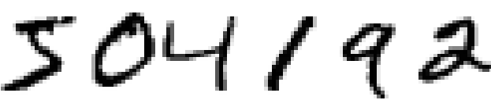
Большинство людей без всякого труда прочитают эти цифры как 504192. Но эта лёгкость обманчива. В каждом полушарии нашего мозга есть первичная зрительная кора, известная также как V\(_1\): в ней 140 миллионов нейронов и десятки миллиардов связей между ними. И при этом в зрении человека участвует не только V\(_1\), а целая череда зрительных областей коры — V\(_2\), V\(_3\), V\(_4\) и V\(_5\), — выполняющих всё более сложную обработку изображений. Мы носим в голове суперкомпьютер, настроенный эволюцией за сотни миллионов лет и превосходно приспособленный к пониманию видимого мира. Распознавать рукописные цифры непросто. Скорее, это мы, люди, потрясающе, поразительно хорошо умеем осмыслять то, что показывают нам глаза. Но почти вся эта работа происходит бессознательно. Поэтому мы обычно не задумываемся, насколько трудную задачу решает наша зрительная система.
Трудность распознавания зрительных образов становится очевидной, если попробовать написать компьютерную программу, распознающую цифры вроде тех, что показаны выше. То, что кажется простым, когда мы делаем это сами, внезапно становится чрезвычайно сложным. Простые интуитивные представления о том, как мы узнаём формы, — «у девятки сверху петля, а справа внизу вертикальная черта» — оказывается совсем непросто выразить в виде алгоритма. Стоит попытаться сделать такие правила точными, как быстро увязаешь в трясине исключений, оговорок и особых случаев. Кажется, что это безнадёжно.
Нейронные сети подходят к задаче иначе. Идея в том, чтобы взять большое количество рукописных цифр, так называемых обучающих примеров,
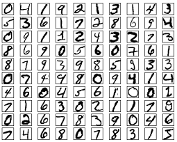
а затем построить систему, которая умеет учиться на этих обучающих примерах. Иными словами, нейронная сеть использует примеры, чтобы автоматически выводить правила распознавания рукописных цифр. Более того, увеличивая число обучающих примеров, сеть может больше узнать о почерке и тем самым повысить свою точность. Выше я показал всего 100 обучающих цифр, но, возможно, мы смогли бы построить более качественный распознаватель почерка, используя тысячи, миллионы или даже миллиарды обучающих примеров.
В этой главе мы напишем компьютерную программу, реализующую нейронную сеть, которая учится распознавать рукописные цифры. Программа занимает всего 74 строки и не использует никаких специальных библиотек для нейронных сетей. Но эта короткая программа способна распознавать цифры с точностью выше 96 процентов без участия человека. Более того, в следующих главах мы разовьём идеи, позволяющие поднять точность выше 99 процентов. Лучшие коммерческие нейронные сети сегодня настолько хороши, что их используют банки для обработки чеков и почта для распознавания адресов.
Мы сосредоточимся на распознавании рукописного текста, потому что это отличная задача-прототип для изучения нейронных сетей в целом. Как прототип она попадает в самую точку: она достаточно трудна — распознать рукописные цифры совсем не просто, — но не настолько, чтобы требовать чрезвычайно сложного решения или огромных вычислительных мощностей. Кроме того, на ней удобно развивать более продвинутые методы, например глубокое обучение. Поэтому на протяжении всей книги мы будем снова и снова возвращаться к задаче распознавания почерка. Позже мы обсудим, как эти идеи можно применить к другим задачам компьютерного зрения, а также к распознаванию речи, обработке естественного языка и другим областям.
Конечно, если бы целью главы было только написать программу для распознавания рукописных цифр, глава была бы гораздо короче! Но по ходу дела мы разовьём множество ключевых идей о нейронных сетях, в том числе два важных типа искусственных нейронов (перцептрон и сигмоидный нейрон) и стандартный алгоритм обучения нейронных сетей, известный как стохастический градиентный спуск. На протяжении всего изложения я стараюсь объяснять, почему всё делается именно так, и развивать у вас интуицию в области нейронных сетей. Это требует более пространного обсуждения, чем если бы я просто изложил основную механику происходящего, но оно того стоит: вы достигнете более глубокого понимания. Среди прочего, к концу главы мы сможем понять, что такое глубокое обучение и почему оно так важно.
1.1 Перцептроны
Что такое нейронная сеть? Для начала я расскажу о типе искусственного нейрона, который называется перцептроном. Перцептроны были разработаны в 1950-х и 1960-х годах учёным Фрэнком Розенблаттом, вдохновлённым более ранней работой Уоррена Мак-Каллока и Уолтера Питтса. Сегодня чаще используют другие модели искусственных нейронов — в этой книге, как и во многих современных работах по нейронным сетям, основной моделью нейрона служит так называемый сигмоидный нейрон. Скоро мы до него доберёмся. Но чтобы понять, почему сигмоидные нейроны устроены именно так, стоит потратить время и сначала разобраться с перцептронами.
Итак, как работает перцептрон? Перцептрон принимает несколько двоичных входов \(x_1, x_2, \ldots\) и выдаёт один двоичный выход:
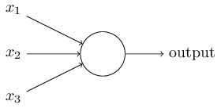
В этом примере у перцептрона три входа: \(x_1\), \(x_2\), \(x_3\). В общем случае входов может быть больше или меньше. Розенблатт предложил простое правило для вычисления выхода. Он ввёл веса \(w_1\),\(w_2\), \(\ldots\) — вещественные числа, выражающие важность соответствующих входов для выхода. Выход нейрона, 0 или 1, определяется тем, меньше или больше взвешенная сумма \(\sum_j w_jx_j\) некоторого порогового значения. Как и веса, порог — это вещественное число, являющееся параметром нейрона. В более точных алгебраических терминах: \[\textrm{выход} = \begin{cases} 0 \quad \textrm{если}\quad \sum_j w_jx_j \le \mathrm{порог} \\ 1 \quad \textrm{если}\quad \sum_j w_jx_j > \mathrm{порог}\tag{1} \end{cases}\] Вот и всё, что нужно знать о работе перцептрона!
Это базовая математическая модель. Перцептрон можно представлять себе как устройство, которое принимает решения, взвешивая свидетельства. Приведу пример. Он не очень реалистичен, но его легко понять, а к более реалистичным примерам мы скоро перейдём. Допустим, приближаются выходные, и вы слышали, что в вашем городе пройдёт фестиваль сыра. Вы любите сыр и пытаетесь решить, идти на фестиваль или нет. Решение можно принять, взвесив три фактора:
Хорошая ли погода?
Хочет ли ваш парень или ваша девушка пойти с вами?
Близко ли фестиваль к остановке общественного транспорта? (Машины у вас нет.)
Эти три фактора можно представить соответствующими двоичными переменными \(x_1\), \(x_2\) и \(x_3\). Например, \(x_1=1\), если погода хорошая, и \(x_1=0\), если плохая. Аналогично \(x_2=1\), если ваш парень или девушка хочет пойти, и \(x_2=0\), если нет. И так же для \(x_3\) и общественного транспорта.
Теперь предположим, что вы просто обожаете сыр — настолько, что с радостью пойдёте на фестиваль, даже если вашему парню или девушке это неинтересно, а добираться туда сложно. Но, допустим, плохую погоду вы терпеть не можете и в плохую погоду ни за что не пойдёте на фестиваль. Такого рода принятие решений можно смоделировать с помощью перцептрона. Один из способов — выбрать вес \(w_1=6\) для погоды и \(w_2=2\) и \(w_3=2\) для остальных условий. Большее значение \(w_1\) показывает, что погода для вас очень важна — намного важнее, чем то, пойдёт ли с вами ваш парень или девушка и близко ли общественный транспорт. Наконец, допустим, вы выбираете для перцептрона порог 5. При таком выборе перцептрон реализует нужную модель принятия решений: он выдаёт 1 всякий раз, когда погода хорошая, и 0, когда погода плохая. На выход никак не влияет, хочет ли пойти ваш парень или девушка и есть ли рядом общественный транспорт.
Меняя веса и порог, можно получать разные модели принятия решений. Например, пусть вместо этого мы выбрали порог 3. Тогда перцептрон решал бы, что на фестиваль стоит идти, если погода хорошая или если фестиваль недалеко от транспорта и ваш парень или девушка готовы пойти с вами. Иными словами, получилась бы другая модель принятия решений. Снижение порога означает, что вы охотнее идёте на фестиваль.
Разумеется, перцептрон — не полная модель того, как человек принимает решения! Но пример показывает, как перцептрон может взвешивать разные виды свидетельств, чтобы принять решение. И кажется правдоподобным, что сложная сеть перцептронов способна принимать весьма тонкие решения:
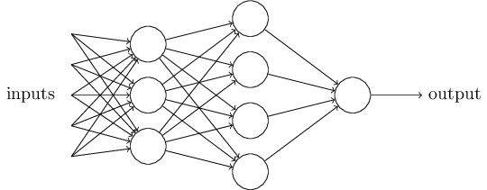
В этой сети первый столбец перцептронов — то, что мы будем называть первым слоем перцептронов, — принимает три очень простых решения, взвешивая входные свидетельства. А что делают перцептроны во втором слое? Каждый из них принимает решение, взвешивая результаты, полученные на первом уровне принятия решений. Таким образом, перцептрон второго слоя может принимать решения на более сложном и абстрактном уровне, чем перцептроны первого слоя. А перцептрон в третьем слое способен принимать ещё более сложные решения. Так многослойная сеть перцептронов может заниматься изощрённым принятием решений.
Кстати, определяя перцептроны, я сказал, что у перцептрона всего один выход. В сети выше кажется, будто у перцептронов несколько выходов. На самом деле выход по-прежнему один. Несколько выходящих стрелок — просто удобный способ показать, что выход перцептрона подаётся на вход нескольким другим перцептронам. Это менее громоздко, чем рисовать одну выходную линию, которая затем разветвляется.
Давайте упростим описание перцептронов. Условие \(\sum_j w_jx_j>\)порог громоздко, и его можно упростить, сделав два изменения в обозначениях. Первое — записать \(\sum_j w_jx_j\) как скалярное произведение \(w\cdot x = \sum_j w_jx_j\), где \(w\) и \(x\) — векторы, компонентами которых являются соответственно веса и входы. Второе — перенести порог в другую часть неравенства и заменить его так называемым смещением перцептрона, b\(\equiv-\)порог. Если использовать смещение вместо порога, правило перцептрона можно переписать так: \[\textrm{выход} = \begin{cases} 0 \quad \textrm{если}\quad w\cdot x + b \le 0 \\ 1 \quad \textrm{если}\quad w\cdot x + b > 0 \tag{2} \end{cases}\] Смещение можно считать мерой того, насколько легко заставить перцептрон выдать 1. Или, если говорить в более биологических терминах, смещение показывает, насколько легко заставить перцептрон сработать (сгенерировать импульс). Перцептрону с очень большим смещением чрезвычайно легко выдать 1. Но если смещение сильно отрицательное, выдать 1 перцептрону трудно. Очевидно, введение смещения — лишь небольшое изменение в описании перцептронов, но позже мы увидим, что оно ведёт к дальнейшим упрощениям записи. Поэтому в оставшейся части книги мы не будем пользоваться порогом и всегда будем использовать смещение.
Я описал перцептроны как способ взвешивать свидетельства для принятия решений. Перцептроны можно использовать и иначе — для вычисления элементарных логических функций, которые мы обычно считаем основой вычислений: И, ИЛИ и И-НЕ (NAND). Например, пусть у нас есть перцептрон с двумя входами, каждый с весом −2, и общим смещением 3. Вот наш перцептрон:
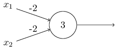
Видно, что вход 00 даёт на выходе 1, поскольку \((-2)\ast0+(-2)\ast0+3=3\) положительно. Здесь я ввёл символ \(\ast\), чтобы явно обозначить умножение. Аналогичные вычисления показывают, что входы 01 и 10 тоже дают 1. А вот вход 11 даёт 0, поскольку \((-2)\ast1+(-2)\ast1+3=-1\) отрицательно. Итак, наш перцептрон реализует логический вентиль И-НЕ!
Пример с И-НЕ показывает, что перцептроны можно использовать для вычисления простых логических функций. На самом деле с помощью сетей перцептронов можно вычислить вообще любую логическую функцию. Причина в том, что вентиль И-НЕ универсален для вычислений: любое вычисление можно собрать из вентилей И-НЕ. Например, из вентилей И-НЕ можно построить схему, складывающую два бита \(x_1\) и \(x_2\). Для этого нужно вычислить побитовую сумму \(x_1\bigoplus x_2\), а также бит переноса, который равен 1, когда и \(x_1\), и \(x_2\) равны 1, то есть бит переноса — это просто побитовое произведение \(x_1x_2\):
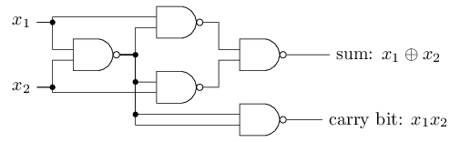
Чтобы получить эквивалентную сеть перцептронов, заменим все вентили И-НЕ перцептронами с двумя входами, каждый с весом −2, и общим смещением 3. Вот что получается. Обратите внимание: перцептрон, соответствующий правому нижнему вентилю И-НЕ, я немного сдвинул, просто чтобы было удобнее рисовать стрелки на схеме:
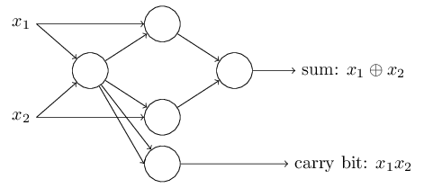
Примечательная особенность этой сети перцептронов в том, что выход самого левого перцептрона дважды подаётся на вход самого нижнего перцептрона. Определяя модель перцептрона, я не говорил, допустим ли такой двойной выход в одно и то же место. На самом деле это не так уж важно. Если мы не хотим такое допускать, можно просто объединить две линии в одну связь с весом −4 вместо двух связей с весами −2. (Если это неочевидно, остановитесь и докажите себе, что это эквивалентно.) После этого изменения сеть выглядит так: все неподписанные веса равны −2, все смещения равны 3, и есть один вес −4, как отмечено на рисунке:
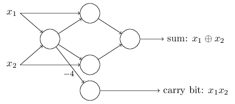
До сих пор я рисовал входы вроде \(x_1\) и \(x_2\) как переменные, парящие слева от сети перцептронов. На самом деле принято рисовать дополнительный слой перцептронов — входной слой, — который кодирует входы:
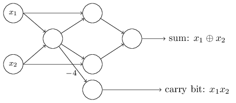
Такое обозначение входных перцептронов, у которых есть выход, но нет входов,
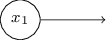
— это сокращённая запись. Оно вовсе не означает перцептрон без входов. Чтобы в этом убедиться, предположим, что у нас действительно есть перцептрон без входов. Тогда взвешенная сумма \(\sum_jw_jx_j\) всегда была бы равна нулю, и перцептрон выдавал бы 1 при \(b>0\) и 0 при \(b\le0\). То есть перцептрон просто выдавал бы фиксированное значение, а не нужное (\(x_1\) в примере выше). Лучше считать входные перцептроны вовсе не перцептронами, а особыми элементами, которые по определению просто выдают нужные значения \(x_1,x_2,\ldots\) .
Пример с сумматором показывает, как сеть перцептронов можно использовать для моделирования схемы, содержащей множество вентилей И-НЕ. А поскольку вентили И-НЕ универсальны для вычислений, отсюда следует, что и перцептроны универсальны для вычислений.
Вычислительная универсальность перцептронов одновременно обнадёживает и разочаровывает. Обнадёживает, потому что говорит нам: сети перцептронов могут быть так же мощны, как любое другое вычислительное устройство. Но и разочаровывает, потому что создаётся впечатление, будто перцептроны — всего лишь новый вид вентилей И-НЕ. Едва ли это большая новость! Однако на деле всё лучше, чем можно подумать. Оказывается, можно придумать алгоритмы обучения, которые автоматически подстраивают веса и смещения сети из искусственных нейронов. Такая подстройка происходит в ответ на внешние стимулы, без прямого вмешательства программиста. Алгоритмы обучения позволяют использовать искусственные нейроны совершенно иначе, чем обычные логические вентили. Вместо того чтобы явно собирать схему из вентилей И-НЕ и других, наши нейронные сети могут просто научиться решать задачи — иногда такие, для которых напрямую спроектировать обычную схему было бы крайне трудно.
1.2 Сигмоидные нейроны
Алгоритмы обучения звучат потрясающе. Но как придумать такие алгоритмы для нейронной сети? Допустим, у нас есть сеть перцептронов, которую мы хотим научить решать какую-то задачу. Например, входами сети могут быть «сырые» значения пикселей отсканированного изображения рукописной цифры. И мы хотим, чтобы сеть подобрала такие веса и смещения, при которых её выход правильно классифицирует цифру. Чтобы понять, как могло бы происходить обучение, предположим, что мы немного изменили какой-нибудь вес (или смещение) в сети. Нам хотелось бы, чтобы это небольшое изменение веса вызывало лишь небольшое соответствующее изменение выхода сети. Как мы сейчас увидим, именно это свойство делает обучение возможным. Схематично вот чего мы хотим (разумеется, эта сеть слишком проста, чтобы распознавать почерк!):
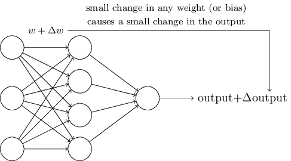
Если бы небольшое изменение веса (или смещения) действительно вызывало лишь небольшое изменение выхода, мы могли бы воспользоваться этим и менять веса и смещения так, чтобы сеть вела себя всё ближе к желаемому. Например, пусть сеть ошибочно относит изображение к «8», хотя это «9». Мы могли бы выяснить, как немного изменить веса и смещения, чтобы сеть стала чуть ближе к тому, чтобы распознать на изображении «9». Затем мы повторяли бы это снова и снова, меняя веса и смещения и получая всё лучший и лучший результат. Сеть училась бы.
Проблема в том, что с сетью из перцептронов всё происходит не так. На самом деле небольшое изменение весов или смещения любого отдельного перцептрона в сети иногда может полностью перевернуть его выход, скажем, с 0 на 1. Этот переворот, в свою очередь, может очень сложным образом полностью изменить поведение остальной сети. И хотя ваша «9» теперь, возможно, будет распознана правильно, поведение сети на всех остальных изображениях, скорее всего, совершенно изменится каким-то трудноконтролируемым образом. Из-за этого непонятно, как постепенно менять веса и смещения, чтобы сеть приближалась к нужному поведению. Возможно, существует какой-то хитрый способ обойти эту проблему. Но сразу не видно, как заставить сеть из перцептронов учиться.
Эту проблему можно преодолеть, введя новый тип искусственного нейрона — сигмоидный нейрон. Сигмоидные нейроны похожи на перцептроны, но видоизменены так, что небольшие изменения их весов и смещения вызывают лишь небольшое изменение выхода. Именно это ключевое свойство позволит сети из сигмоидных нейронов обучаться.
Итак, опишу сигмоидный нейрон. Изображать сигмоидные нейроны мы будем так же, как перцептроны:
Как и у перцептрона, у сигмоидного нейрона есть входы \(x_1, x_2, \ldots\). Но они могут принимать не только значения 0 или 1, а любые значения от 0 до 1. Например, \(0.638\ldots\) — допустимый вход для сигмоидного нейрона. Так же как у перцептрона, у сигмоидного нейрона есть веса для каждого входа \(w_1,w_2,\ldots\) и общее смещение \(b\). Но на выходе у него не 0 или 1, а \(\sigma(w\cdot x+b)\), где \(\sigma\) называется сигмоидой (сигмоидной функцией)1 и определяется так:
\[\sigma(z) \equiv \frac1{1+e^{-z}}.\tag{3}\label{eq:sigma}\] Если записать всё чуть более явно, выход сигмоидного нейрона с входами \(x_1\),\(x_2\),\(\ldots\), весами \(w_1,w_2,\ldots\) и смещением \(b\) равен \[\frac1{1+\exp\left(-\sum_jw_jx_j-b\right)}.\tag{4}\label{eq:4}\] На первый взгляд сигмоидные нейроны сильно отличаются от перцептронов. Алгебраическая форма сигмоиды может показаться туманной и пугающей, если вы с ней ещё не знакомы. На самом деле у перцептронов и сигмоидных нейронов много общего, а алгебраическая форма сигмоиды оказывается скорее технической деталью, чем настоящим препятствием для понимания.
Чтобы увидеть сходство с моделью перцептрона, предположим, что \(z\equiv w\cdot x+b\) — большое положительное число. Тогда \(e^{-z}\approx0\), и поэтому \(\sigma(z)\approx 1\). Иными словами, когда \(z=w\cdot x+b\) велико и положительно, выход сигмоидного нейрона примерно равен 1 — так же, как было бы у перцептрона. Теперь, наоборот, пусть \(z=w\cdot x+b\) сильно отрицательно. Тогда \(e^{-z}\to\infty\) и \(\sigma(z)\approx0\). Так что при сильно отрицательном \(z=w\cdot x+b\) поведение сигмоидного нейрона тоже очень близко к перцептрону. Заметно отклоняется от модели перцептрона оно лишь тогда, когда \(w\cdot x+b\) невелико по модулю.
А что насчёт алгебраической формы \(\sigma\)? Как её понимать? На самом деле точная формула \(\sigma\) не так важна — по-настоящему важна форма графика этой функции. Вот она:

Это сглаженная версия ступенчатой функции:
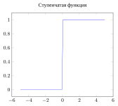
Если бы \(\sigma\) на самом деле была ступенчатой функцией, то сигмоидный нейрон был бы перцептроном, поскольку его выход был бы равен 1 или 0 в зависимости от того, положительно или отрицательно \(w\cdot x + b\)2. Используя настоящую функцию \(\sigma\), мы получаем, как уже говорилось, сглаженный перцептрон. И ключевое значение имеет именно гладкость функции \(\sigma\), а не её конкретный вид. Гладкость \(\sigma\) означает, что небольшие изменения весов \(\Delta{}w_j\) и смещения \(\Delta{}b\) вызовут небольшое изменение \(\Delta\textrm{выхода}\) нейрона. Математический анализ говорит нам, что \(\Delta\textrm{выхода}\) хорошо приближается выражением \[\Delta\textrm{выход}\approx \sum_j\frac{\partial\textrm{выход}}{\partial w_j}\Delta w_j + \frac{\partial\textrm{выход}}{\partial b}\Delta b \tag{5}\label{eq:doutput}\] где сумма берётся по всем весам \(w_j\), а \(\partial\textrm{выход}/\partial w_j\) и \(\partial\textrm{выход}/\partial b\) обозначают частные производные выхода по \(w_j\) и \(b\) соответственно. Не паникуйте, если частные производные для вас непривычны! Хотя выражение выше со всеми этими частными производными выглядит сложным, на самом деле оно говорит нечто очень простое (и это очень хорошая новость): \(\Delta\textrm{выход}\) — линейная функция изменений весов и смещения \(\Delta w_j\) и \(\Delta b\). Благодаря этой линейности легко подобрать небольшие изменения весов и смещений, дающие любое нужное небольшое изменение выхода. Таким образом, качественно сигмоидные нейроны ведут себя во многом так же, как перцептроны, но с ними гораздо проще понять, как изменение весов и смещений повлияет на выход.
Если на самом деле важна форма графика \(\sigma\), а не точная формула, то зачем использовать именно ту формулу для \(\sigma\), которая дана в уравнении (3)? Действительно, дальше в книге мы иногда будем рассматривать нейроны, выход которых равен \(f(w\cdot x + b)\) для какой-то другой функции активации \(f(\cdot)\). Главное, что меняется при использовании другой функции активации, — конкретные значения частных производных в уравнении (5). Оказывается, когда мы позже будем вычислять эти частные производные, использование \(\sigma\) упростит алгебру — просто потому, что экспоненты обладают замечательными свойствами при дифференцировании. Так или иначе, \(\sigma\) широко используется в работе с нейронными сетями, и именно эту функцию активации мы чаще всего будем использовать в книге.
Как интерпретировать выход сигмоидного нейрона? Очевидно, одно большое отличие сигмоидных нейронов от перцептронов в том, что они выдают не только 0 или 1. Их выходом может быть любое вещественное число от 0 до 1, так что значения вроде 0.173\(\ldots\) и 0.689\(\ldots\) — вполне законные выходы. Это бывает полезно, например, если мы хотим, чтобы выход представлял среднюю интенсивность пикселей изображения, поданного на вход нейронной сети. Но иногда это мешает. Допустим, мы хотим, чтобы выход сети сообщал либо «на входном изображении 9», либо «на входном изображении не 9». Очевидно, проще всего это сделать, если выход равен 0 или 1, как у перцептрона. Но на практике можно ввести соглашение, например договориться считать любой выход не меньше 0.5 указанием на «9», а любой выход меньше 0.5 — указанием на «не 9». Я всегда буду явно говорить, когда мы используем такое соглашение, так что путаницы возникнуть не должно.
1.2.1 Упражнения
Сигмоидные нейроны, имитирующие перцептроны, часть I. Возьмём все веса и смещения в сети перцептронов и умножим их на положительную константу c>0. Покажите, что поведение сети не изменится.
Сигмоидные нейроны, имитирующие перцептроны, часть II. Пусть условия те же, что и в предыдущей задаче, — сеть перцептронов. Пусть также выбран общий вход сети. Конкретное значение входа нам не понадобится, нужно лишь, чтобы он был зафиксирован. Предположим, что веса и смещения таковы, что \(w\cdot x + b \ne 0\) для входа x любого перцептрона в сети. Теперь заменим все перцептроны в сети сигмоидными нейронами и умножим веса и смещения на положительную константу \(c>0\). Покажите, что в пределе при \(c\to\infty\) поведение такой сети из сигмоидных нейронов в точности совпадает с поведением сети перцептронов. Почему это может нарушиться, если для одного из перцептронов \(w\cdot x+b=0\)?
1.3 Архитектура нейронных сетей
В следующем разделе я представлю нейронную сеть, которая довольно хорошо классифицирует рукописные цифры. Чтобы подготовиться к этому, полезно ввести терминологию, позволяющую называть разные части сети. Пусть у нас есть такая сеть:
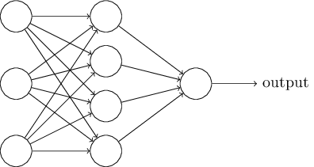
Как уже говорилось, самый левый слой этой сети называется входным, а нейроны в нём — входными нейронами. Самый правый, или выходной, слой содержит выходные нейроны — в данном случае один выходной нейрон. Средний слой называется скрытым, поскольку его нейроны не являются ни входами, ни выходами. Слово «скрытый», пожалуй, звучит немного загадочно — когда я впервые его услышал, то подумал, что за ним должен стоять какой-то глубокий философский или математический смысл, — но на самом деле оно означает лишь «не вход и не выход». В сети выше всего один скрытый слой, но в некоторых сетях их несколько. Например, в следующей четырёхслойной сети два скрытых слоя:
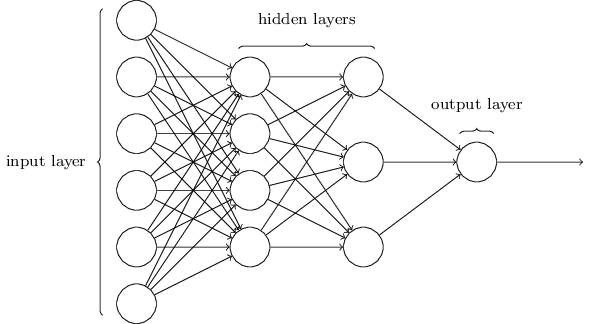
Несколько сбивает с толку то, что по историческим причинам такие многослойные сети иногда называют многослойными перцептронами, или MLP (multilayer perceptron), хотя они состоят из сигмоидных нейронов, а не из перцептронов. В этой книге я не буду пользоваться термином MLP, поскольку считаю его запутанным, но хотел предупредить вас о его существовании.
Устройство входного и выходного слоёв сети часто очевидно. Например, пусть мы пытаемся определить, изображена ли на рукописной картинке «9». Естественный способ спроектировать сеть — закодировать интенсивности пикселей изображения во входных нейронах. Если изображение имеет размер 64 на 64 пикселя в оттенках серого, то у нас будет \(4\,096=64\times64\) входных нейрона, а интенсивности будут соответствующим образом отмасштабированы в диапазон от 0 до 1. Выходной слой будет содержать всего один нейрон: значения выхода меньше 0.5 будут означать «на входном изображении не 9», а больше 0.5 — «на входном изображении 9».
Хотя устройство входного и выходного слоёв нейронной сети часто очевидно, проектирование скрытых слоёв может быть настоящим искусством. В частности, процесс проектирования скрытых слоёв невозможно свести к нескольким простым практическим правилам. Вместо этого исследователи нейронных сетей разработали множество эвристик для проектирования скрытых слоёв, помогающих добиться от сетей нужного поведения. Например, такие эвристики помогают решить, как соотнести число скрытых слоёв со временем, необходимым для обучения сети. Несколько таких эвристик мы встретим дальше в книге.
До сих пор мы обсуждали нейронные сети, в которых выход одного слоя служит входом для следующего. Такие сети называются нейронными сетями прямого распространения. Это значит, что в сети нет циклов — информация всегда передаётся вперёд и никогда не возвращается назад. Если бы циклы были, возникали бы ситуации, когда вход функции \(\sigma\) зависит от её выхода. В этом было бы трудно разобраться, поэтому такие циклы мы не допускаем.
Однако существуют и другие модели искусственных нейронных сетей, в которых обратные связи возможны. Такие модели называются рекуррентными нейронными сетями. Идея этих моделей в том, что нейроны срабатывают в течение некоторого ограниченного времени, а затем затихают. Это срабатывание может возбуждать другие нейроны, которые сработают чуть позже, тоже на ограниченное время. Это заставляет срабатывать всё новые нейроны, и со временем мы получаем каскад срабатываний. Циклы в такой модели не создают проблем, поскольку выход нейрона влияет на его вход лишь спустя некоторое время, а не мгновенно.
Рекуррентные нейронные сети оказали меньшее влияние, чем сети прямого распространения, отчасти потому, что алгоритмы их обучения (по крайней мере пока) менее мощные. Но рекуррентные сети всё равно чрезвычайно интересны. По духу они гораздо ближе к тому, как работает наш мозг, чем сети прямого распространения. И вполне возможно, что рекуррентные сети способны решать важные задачи, которые сетям прямого распространения даются лишь с огромным трудом. Однако, чтобы не расширять тему, в этой книге мы сосредоточимся на более распространённых сетях прямого распространения.
1.4 Простая сеть для классификации рукописных цифр
Определив нейронные сети, вернёмся к распознаванию почерка. Задачу распознавания рукописных цифр можно разбить на две подзадачи. Во-первых, нужен способ разбить изображение, содержащее много цифр, на последовательность отдельных изображений, на каждом из которых по одной цифре. Например, мы хотели бы разбить изображение
на шесть отдельных изображений:
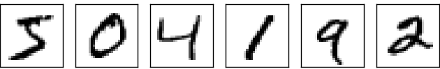
Мы, люди, легко решаем эту задачу сегментации, а вот компьютерной программе правильно разбить изображение непросто. После сегментации программе нужно классифицировать каждую отдельную цифру. Например, мы хотим, чтобы программа узнала в первой цифре выше,
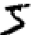
пятёрку.
Мы сосредоточимся на написании программы для второй задачи — классификации отдельных цифр. Делаем мы так потому, что, как оказывается, задачу сегментации решить не так уж трудно, если есть хороший способ классифицировать отдельные цифры. Подходов к сегментации много. Один из них — перебирать множество разных вариантов разбиения изображения, оценивая каждый пробный вариант с помощью классификатора отдельных цифр. Пробное разбиение получает высокую оценку, если классификатор уверен в своём ответе во всех сегментах, и низкую, если в одном или нескольких сегментах классификатор испытывает большие трудности. Идея в том, что если классификатор где-то спотыкается, то, вероятно, потому, что разбиение выбрано неправильно. С помощью этой идеи и её вариаций задачу сегментации можно решить весьма неплохо. Поэтому вместо того чтобы беспокоиться о сегментации, мы сосредоточимся на разработке нейронной сети, способной решить более интересную и трудную задачу — распознавание отдельных рукописных цифр.
Для распознавания отдельных цифр мы будем использовать трёхслойную нейронную сеть:
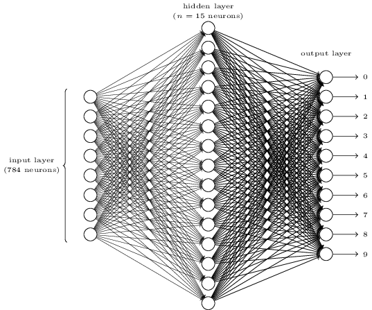
Входной слой сети содержит нейроны, кодирующие значения входных пикселей. Как будет сказано в следующем разделе, обучающие данные для сети будут состоять из множества отсканированных изображений рукописных цифр размером 28 на 28 пикселей, поэтому входной слой содержит \(784=28\times28\) нейрона. Для простоты я не стал рисовать на схеме большую часть из 784 входных нейронов. Входные пиксели заданы в оттенках серого: значение 0.0 соответствует белому цвету, 1.0 — чёрному, а промежуточные значения — постепенно темнеющим оттенкам серого.
Второй слой сети — скрытый. Число нейронов в нём мы обозначим через \(n\) и будем экспериментировать с разными значениями \(n\). В показанном примере скрытый слой маленький: всего \(n=15\) нейронов.
Выходной слой сети содержит 10 нейронов. Если срабатывает первый нейрон, то есть его выход \(\approx 1\), это будет означать, что, по мнению сети, на изображении цифра 0. Если срабатывает второй нейрон — что, по мнению сети, это цифра 1. И так далее. Чуть точнее: мы нумеруем выходные нейроны от 0 до 9 и смотрим, у какого нейрона самое большое значение активации. Если это, скажем, нейрон номер 6, то сеть предполагает, что на входе была цифра 6. И так же для остальных выходных нейронов.
Возможно, вы спросите, зачем нам 10 выходных нейронов. Ведь цель сети — сообщить, какая цифра (0, 1, 2,\(\ldots\), 9) соответствует входному изображению. Казалось бы, естественно использовать всего 4 выходных нейрона и считать, что каждый принимает двоичное значение в зависимости от того, ближе его выход к 0 или к 1. Четырёх нейронов достаточно, чтобы закодировать ответ, поскольку \(2^4=16\) больше, чем 10 возможных значений цифры. Почему же сеть должна использовать 10 нейронов? Разве это не расточительно? Окончательное обоснование эмпирическое: можно попробовать обе конструкции сети, и оказывается, что для этой конкретной задачи сеть с 10 выходными нейронами учится распознавать цифры лучше, чем сеть с 4 выходными нейронами. Но остаётся вопрос, почему 10 выходных нейронов работают лучше. Существует ли эвристика, которая заранее подсказала бы, что следует использовать кодирование 10 выходами, а не 4?
Чтобы понять, почему мы так делаем, полезно подумать, что делает нейронная сеть, исходя из первых принципов. Сначала рассмотрим случай с 10 выходными нейронами. Сосредоточимся на первом выходном нейроне — том, который пытается решить, является ли цифра нулём. Он делает это, взвешивая свидетельства, поступающие от скрытого слоя нейронов. А что делают скрытые нейроны? Предположим ради рассуждения, что первый нейрон скрытого слоя определяет, присутствует ли на изображении вот такой фрагмент:
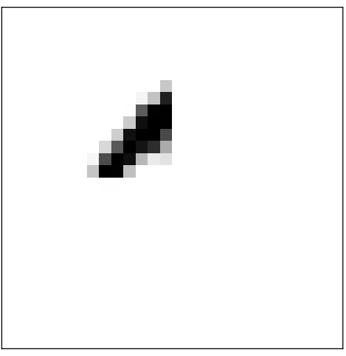
Он может делать это, придавая большой вес входным пикселям, которые совпадают с фрагментом, и лишь малый вес остальным входам. Аналогично предположим ради рассуждения, что второй, третий и четвёртый нейроны скрытого слоя определяют, присутствуют ли на изображении следующие фрагменты:
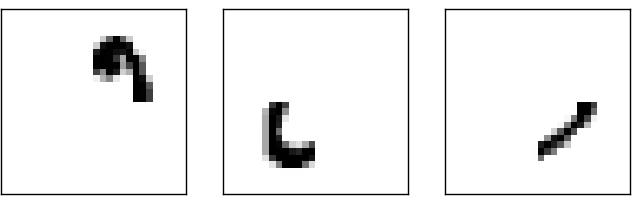
Как вы, наверное, догадались, вместе эти четыре фрагмента составляют изображение нуля, которое мы видели в ряду цифр выше:
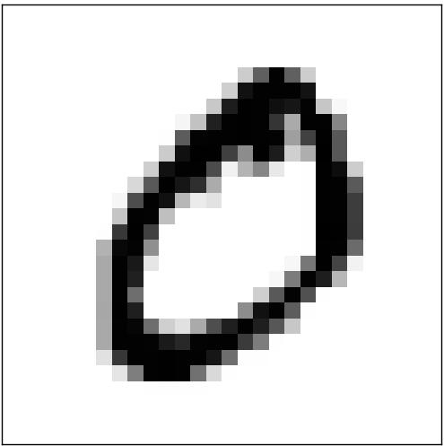
Так что если срабатывают все четыре скрытых нейрона, можно заключить, что на изображении 0. Конечно, это не единственный вид свидетельств, по которым можно заключить, что на изображении ноль, — ноль вполне может получиться и многими другими способами (скажем, при сдвигах показанных фрагментов или небольших искажениях). Но, по-видимому, можно уверенно сказать, что по крайней мере в этом случае мы заключили бы, что на входе 0.
Если предположить, что нейронная сеть работает именно так, можно дать правдоподобное объяснение, почему лучше иметь 10 выходов, а не 4. При 4 выходах первый выходной нейрон пытался бы решить, каков старший бит цифры. А связать этот старший бит с простыми формами вроде показанных выше непросто. Трудно представить себе какую-либо разумную причину, по которой составные формы цифры были бы тесно связаны, скажем, со старшим битом выхода.
При всём сказанном это лишь эвристика. Ничто не обязывает трёхслойную нейронную сеть работать так, как я описал, — со скрытыми нейронами, обнаруживающими простые составные формы. Возможно, хитрый алгоритм обучения найдёт такой набор весов, который позволит обойтись всего 4 выходными нейронами. Но как эвристика описанный образ мышления работает весьма неплохо и может сэкономить вам много времени при проектировании хороших архитектур нейронных сетей.
1.4.1 Упражнение
Двоичное представление цифры можно получить, добавив к трёхслойной сети выше ещё один слой. Этот дополнительный слой преобразует выход предыдущего слоя в двоичное представление, как показано на рисунке ниже. Найдите набор весов и смещений для нового выходного слоя. Считайте, что первые 3 слоя нейронов таковы, что правильный выход в третьем слое (то есть в старом выходном слое) имеет активацию не меньше 0.99, а неправильные выходы — активацию меньше 0.01.
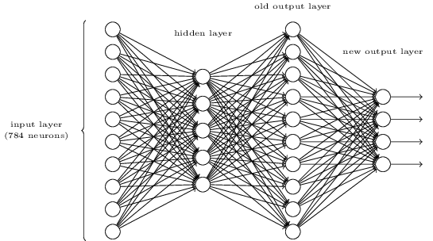
1.5 Обучение с помощью градиентного спуска
Итак, у нас есть устройство нейронной сети. Как же она научится распознавать цифры? Первое, что нам понадобится, — набор данных, на котором можно учиться, так называемый обучающий набор данных. Мы будем использовать набор данных MNIST, содержащий десятки тысяч отсканированных изображений рукописных цифр вместе с их правильной классификацией. Название MNIST связано с тем, что это модифицированное подмножество двух наборов данных, собранных NIST — Национальным институтом стандартов и технологий США. Вот несколько изображений из MNIST:
Как видите, это на самом деле те же цифры, что были показаны в начале главы как задача на распознавание. Разумеется, проверяя сеть, мы будем просить её распознать изображения, которых нет в обучающем наборе!
Данные MNIST состоят из двух частей. Первая часть содержит 60 000 изображений, предназначенных для обучения. Это отсканированные образцы почерка 250 человек, половина из которых — сотрудники Бюро переписи населения США, а половина — старшеклассники. Изображения в оттенках серого, размером 28 на 28 пикселей. Вторая часть набора MNIST — 10 000 изображений, предназначенных для тестирования. Это тоже изображения 28 на 28 в оттенках серого. По тестовым данным мы будем оценивать, насколько хорошо наша нейронная сеть научилась распознавать цифры. Чтобы проверка была честной, тестовые данные взяты у другой группы из 250 человек, не тех, что писали обучающие данные (хотя это тоже группа, разделённая между сотрудниками Бюро переписи и старшеклассниками). Это даёт уверенность, что наша система способна распознавать цифры людей, чей почерк она не видела во время обучения.
Обучающий вход мы будем обозначать через \(x\). Удобно считать каждый обучающий вход \(x\) вектором размерности \(28\times28=784\). Каждая компонента вектора — это значение серого для одного пикселя изображения. Соответствующий желаемый выход будем обозначать \(y=y(x)\), где \(y\) — 10-мерный вектор. Например, если на конкретном обучающем изображении \(x\) изображена 6, то желаемый выход сети — \(y(x)=(0,0,0,0,0,0,1,0,0,0)^T\). Здесь \(T\) — операция транспонирования, превращающая вектор-строку в обычный вектор-столбец.
Нам нужен алгоритм, который позволит найти такие веса и смещения, чтобы выход сети приближал \(y(x)\) для всех обучающих входов \(x\). Чтобы количественно оценить, насколько хорошо мы достигаем этой цели, определим функцию стоимости3: \[C(w,b) \equiv\frac1{2n}\sum_x\|y(x)-a\|^2 \tag{6}\label{eq:6}\] Здесь \(w\) обозначает совокупность всех весов сети, \(b\) — всех смещений, \(n\) — общее число обучающих входов, \(a\) — вектор выходов сети при входе \(x\), а сумма берётся по всем обучающим входам \(x\). Разумеется, выход \(a\) зависит от \(x\), \(w\) и \(b\), но для простоты записи я не указываю эту зависимость явно. Запись \(\|v\|\) означает обычную длину вектора \(v\). Будем называть \(C\) квадратичной функцией стоимости; иногда её также называют среднеквадратичной ошибкой, или просто MSE (mean squared error). Глядя на вид квадратичной функции стоимости, мы видим, что \(C(w,b)\) неотрицательна, поскольку каждое слагаемое суммы неотрицательно. Кроме того, стоимость \(C(w,b)\) становится малой, то есть \(C(w,b)\approx0\), ровно тогда, когда \(y(x)\) приблизительно равно выходу \(a\) для всех обучающих входов \(x\). Значит, алгоритм обучения хорошо справился с работой, если он смог найти веса и смещения, при которых \(C(w,b)\approx0\). И наоборот, он работает плохо, если \(C(w,b)\) велика, — это означало бы, что \(y(x)\) далеко от выхода a для большого числа входов. Поэтому цель нашего алгоритма обучения — минимизировать стоимость \(C(w,b)\) как функцию весов и смещений. Иными словами, мы хотим найти набор весов и смещений, при котором стоимость минимальна. Делать мы это будем с помощью алгоритма, известного как градиентный спуск.
Зачем вводить квадратичную стоимость? Разве нас в первую очередь интересует не число изображений, которые сеть классифицирует правильно? Почему бы не максимизировать это число напрямую, вместо того чтобы минимизировать косвенную меру вроде квадратичной стоимости? Проблема в том, что число правильно классифицированных изображений не является гладкой функцией весов и смещений сети. Как правило, небольшие изменения весов и смещений вообще никак не меняют число правильно классифицированных обучающих изображений. Из-за этого трудно понять, как менять веса и смещения, чтобы улучшить результат. Если же вместо этого использовать гладкую функцию стоимости, например квадратичную, то оказывается легко понять, как немного изменить веса и смещения, чтобы стоимость уменьшилась. Поэтому мы сначала сосредоточимся на минимизации квадратичной стоимости и только после этого займёмся точностью классификации.
Даже если согласиться, что нужна гладкая функция стоимости, всё равно можно спросить, почему мы выбираем именно квадратичную функцию из уравнения (6). Не слишком ли произвольный это выбор? Может быть, выбрав другую функцию стоимости, мы получили бы совершенно другой набор минимизирующих весов и смещений? Это обоснованное опасение, и позже мы вернёмся к функции стоимости и внесём некоторые изменения. Однако квадратичная функция стоимости из уравнения (6) отлично подходит для понимания основ обучения нейронных сетей, так что пока будем пользоваться ею.
Подведём итог: наша цель при обучении нейронной сети — найти веса и смещения, минимизирующие квадратичную функцию стоимости \(C(w,b)\). Это корректно поставленная задача, но в нынешней формулировке в ней много отвлекающей структуры: интерпретация \(w\) и \(b\) как весов и смещений, функция \(\sigma\), скрывающаяся на заднем плане, выбор архитектуры сети, MNIST и так далее. Оказывается, очень многое можно понять, отбросив большую часть этой структуры и сосредоточившись только на минимизации. Поэтому пока забудем о конкретном виде функции стоимости, о связи с нейронными сетями и так далее. Представим, что нам просто дана функция многих переменных и мы хотим её минимизировать. Мы разработаем метод под названием градиентный спуск, позволяющий решать такие задачи минимизации. А затем вернёмся к конкретной функции, которую нужно минимизировать в нейронных сетях.
Итак, пусть мы пытаемся минимизировать некоторую функцию \(C(v)\). Это может быть любая вещественнозначная функция многих переменных \(v=v_1,v_2,\ldots\). Обратите внимание: я заменил обозначения \(w\) и \(b\) на \(v\), чтобы подчеркнуть, что это может быть любая функция, — мы больше не думаем конкретно о нейронных сетях. Чтобы минимизировать \(C(v)\), полезно представить \(C\) как функцию всего двух переменных, которые мы назовём \(v_1\) и \(v_2\):
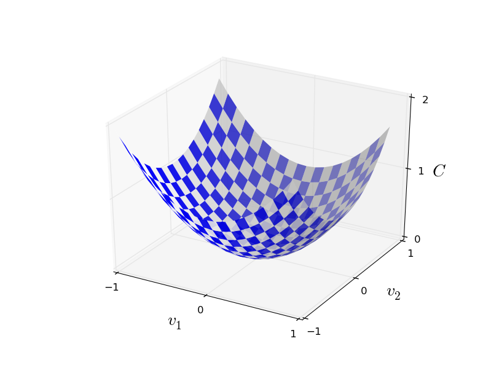
Мы хотим найти, где \(C\) достигает глобального минимума. Конечно, для функции на графике выше минимум легко найти на глаз. В этом смысле я, пожалуй, показал слишком простую функцию! В общем случае функция \(C\) может быть сложной функцией многих переменных, и найти минимум, просто взглянув на график, обычно не получится.
Один из способов подступиться к задаче — использовать математический анализ и попытаться найти минимум аналитически. Можно вычислить производные, а затем с их помощью попытаться найти точки, где у \(C\) экстремум. Если повезёт, это может сработать, когда \(C\) — функция одной или нескольких переменных. Но если переменных гораздо больше, это превратится в кошмар. А в нейронных сетях переменных нам часто нужно гораздо больше — у самых больших нейронных сетей функции стоимости чрезвычайно сложно зависят от миллиардов весов и смещений. Минимизировать такое с помощью анализа просто не получится!
(Заявив, что мы лучше поймём суть, если представим \(C\) функцией всего двух переменных, я дважды за два абзаца развернулся и сказал: «Минуточку, а что если это функция гораздо большего числа переменных?» Простите. Пожалуйста, поверьте мне: представлять \(C\) функцией двух переменных действительно полезно. Просто иногда эта картина перестаёт работать, и два последних абзаца как раз были о таких случаях. Хорошее математическое мышление часто требует жонглировать несколькими интуитивными картинами, понимая, когда уместна каждая из них, а когда нет.)
Итак, анализ не работает. К счастью, есть красивая аналогия, подсказывающая алгоритм, который работает весьма неплохо. Для начала представим нашу функцию как своего рода долину. Если немного прищуриться, глядя на график выше, это нетрудно. И представим шарик, катящийся по склону долины. Повседневный опыт говорит нам, что в конце концов шарик скатится на дно. Может быть, эту идею можно использовать, чтобы найти минимум функции? Мы бы случайно выбрали начальную точку для (воображаемого) шарика, а затем смоделировали бы его движение вниз, на дно долины. Такое моделирование можно провести, просто вычисляя производные (а может быть, и некоторые вторые производные) функции \(C\) — эти производные расскажут нам всё, что нужно знать о локальной «форме» долины, а значит, и о том, как должен катиться шарик.
Исходя из только что написанного, вы могли бы решить, что мы будем записывать ньютоновские уравнения движения шарика с учётом трения, силы тяжести и так далее. На самом деле мы не станем относиться к аналогии с катящимся шариком настолько серьёзно — мы придумываем алгоритм минимизации \(C\), а не точную модель законов физики! Взгляд с точки зрения шарика призван подстегнуть воображение, а не ограничивать мышление. Поэтому, вместо того чтобы погружаться во все запутанные детали физики, спросим себя: если бы нас на один день объявили Богом и мы могли бы придумать собственные законы физики, диктуя шарику, как ему катиться, — какой закон или законы движения нам выбрать, чтобы шарик всегда скатывался на дно долины?
Чтобы уточнить вопрос, подумаем, что происходит, когда мы сдвигаем шарик на небольшую величину \(\Delta v_1\) в направлении \(v_1\) и на небольшую величину \(\Delta v_2\) в направлении \(v_2\). Математический анализ говорит, что \(C\) меняется так: \[\Delta C \approx \frac{\partial C}{\partial v_1} \Delta v_1 + \frac{\partial C}{\partial v_2} \Delta v_2. \tag{7}\label{eq:7}\] Мы найдём способ выбирать \(\Delta v_1\) и \(\Delta v_2\) так, чтобы \(\Delta C\) было отрицательным, то есть чтобы шарик катился вниз, в долину. Чтобы понять, как сделать такой выбор, удобно определить \(\Delta v\) как вектор изменений \(v\): \(\Delta v \equiv (\Delta v_1, \Delta v_2)^T\), где \(T\) — снова операция транспонирования, превращающая векторы-строки в векторы-столбцы. Определим также градиент \(C\) как вектор частных производных \(\left(\frac{\partial C}{\partial v_1}, \frac{\partial C}{\partial v_2}\right)^T\). Вектор градиента будем обозначать \(\nabla C\), то есть: \[\nabla C \equiv \left( \frac{\partial C}{\partial v_1}, \frac{\partial C}{\partial v_2} \right)^T. \tag{8}\label{eq:8}\] Сейчас мы перепишем изменение \(\Delta C\) через \(\Delta{}v\) и градиент \(\nabla C\). Но сначала я хочу прояснить момент, на котором многие спотыкаются, знакомясь с градиентом. Впервые встречая обозначение \(\nabla C\), люди иногда не понимают, как воспринимать символ \(\nabla\). Что именно означает \(\nabla C\)? На самом деле вполне нормально считать \(\nabla C\) единым математическим объектом — определённым выше вектором, — который просто записывается двумя символами. С этой точки зрения \(\nabla C\) — всего лишь флажок в обозначениях, сообщающий: «эй, \(\nabla C\) — это вектор градиента». Существуют и более продвинутые точки зрения, где \(\nabla C\) можно рассматривать как самостоятельную математическую сущность (например, как дифференциальный оператор), но они нам не понадобятся.
С этими определениями выражение (7) для \(\Delta C\) можно переписать так: \[\Delta C \approx \nabla C \cdot \Delta v \tag{9}\label{eq:9}\] Это уравнение помогает понять, почему \(\nabla C\) называют вектором градиента: \(\nabla C\) связывает изменения \(v\) с изменениями \(C\) — именно этого и ждёшь от того, что называется градиентом. Но по-настоящему увлекательно в этом уравнении то, что оно показывает, как выбрать \(\Delta v\), чтобы \(\Delta C\) было отрицательным. А именно, пусть мы выбираем \[\Delta v = -\eta \nabla C, \tag{10}\label{eq:10}\] где \(\eta\) — небольшой положительный параметр (он называется скоростью обучения). Тогда уравнение (9) говорит нам, что \(\Delta C \approx -\eta \nabla C \cdot \nabla C = -\eta \|\nabla C\|^2\). Поскольку \(\| \nabla C\|^2 \geq 0\), это гарантирует, что \(\Delta C \leq 0\), то есть \(C\) всегда будет уменьшаться и никогда не будет расти, если менять \(v\) по правилу (10). (Разумеется, в пределах применимости приближения из уравнения (9).) Это ровно то свойство, которое нам нужно! Поэтому уравнение (10) мы возьмём в качестве «закона движения» шарика в нашем алгоритме градиентного спуска. То есть с помощью уравнения (10) мы будем вычислять значение \(\Delta v\), а затем сдвигать положение шарика \(v\) на эту величину: \[v \to v' = v -\eta \nabla C. \tag{11}\label{eq:11}\] Затем мы снова применим это правило обновления, чтобы сделать следующий шаг. Если повторять это снова и снова, мы будем всё время уменьшать \(C\), пока — как мы надеемся — не достигнем глобального минимума.
Итак, алгоритм градиентного спуска работает так: многократно вычисляем градиент \(\nabla C\) и сдвигаемся в противоположном направлении, «скатываясь» по склону долины. Это можно представить так:
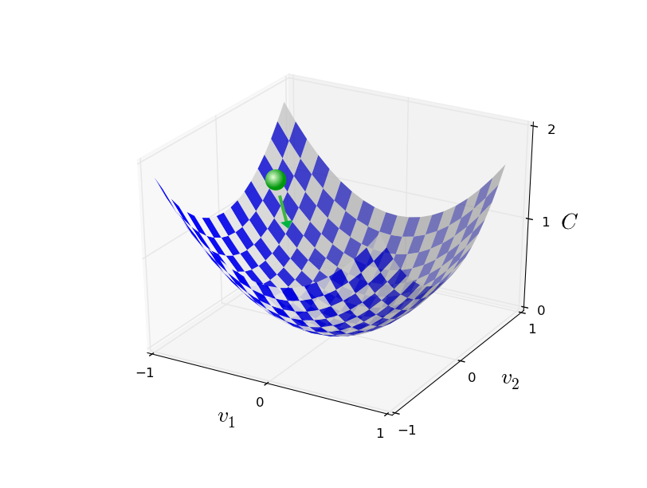
Обратите внимание: с таким правилом градиентный спуск не воспроизводит настоящее физическое движение. В реальной жизни у шарика есть импульс, и благодаря ему он может катиться поперёк склона или даже (ненадолго) вверх. Лишь когда начинает действовать трение, шарик гарантированно скатывается в долину. Наше же правило выбора \(\Delta v\) просто говорит: «иди вниз, прямо сейчас». И это всё равно весьма неплохое правило для поиска минимума!
Чтобы градиентный спуск работал правильно, скорость обучения \(\eta\) нужно выбирать достаточно малой, чтобы уравнение (9) было хорошим приближением. Иначе мы можем получить \(\Delta C > 0\), что, очевидно, плохо! В то же время \(\eta\) не должна быть слишком малой, поскольку тогда изменения \(\Delta v\) будут крошечными и алгоритм градиентного спуска будет работать очень медленно. В практических реализациях \(\eta\) часто меняют по ходу работы, чтобы уравнение (9) оставалось хорошим приближением, но алгоритм не был слишком медленным. Позже мы увидим, как это делается.
Я объяснил градиентный спуск для случая, когда \(C\) — функция всего двух переменных. Но на самом деле всё работает так же хорошо и тогда, когда \(C\) — функция гораздо большего числа переменных. А именно, пусть \(C\) — функция \(m\) переменных \(v_1, \ldots,v_m\). Тогда изменение \(\Delta C\) функции \(C\), вызванное небольшим изменением \(\Delta v = (\Delta v_1, \ldots, \Delta v_m)^T\), равно \[\Delta C \approx \nabla C \cdot \Delta v, \tag{12}\label{eq:12}\] где градиент \(\nabla C\) — это вектор \[\nabla C \equiv \left(\frac{\partial C}{\partial v_1}, \ldots, \frac{\partial C}{\partial v_m}\right)^T. \tag{13}\label{eq:13}\] Как и в случае двух переменных, можно выбрать \[\Delta v = -\eta \nabla C, \tag{14}\label{eq:14}\] и тогда наше (приближённое) выражение (12) для \(\Delta C\) гарантированно будет отрицательным. Это даёт способ следовать за градиентом к минимуму даже тогда, когда \(C\) — функция многих переменных: нужно многократно применять правило обновления \[v \rightarrow v' = v-\eta \nabla C. \tag{15}\label{eq:15}\] Это правило обновления можно считать определением алгоритма градиентного спуска. Оно даёт способ многократно менять положение v, чтобы найти минимум функции \(C\). Правило срабатывает не всегда — что-то может пойти не так и помешать градиентному спуску найти глобальный минимум \(C\); к этому вопросу мы вернёмся в следующих главах. Но на практике градиентный спуск часто работает исключительно хорошо, и в нейронных сетях мы увидим, что это мощный способ минимизировать функцию стоимости и тем самым помогать сети учиться.
В некотором смысле градиентный спуск — даже оптимальная стратегия поиска минимума. Предположим, мы хотим сделать шаг \(\Delta v\), чтобы уменьшить \(C\) как можно сильнее. Это эквивалентно минимизации \(\Delta C \approx \nabla C \cdot \Delta v\). Ограничим размер шага так, чтобы \(\|\Delta v\| = \epsilon\) для некоторого малого фиксированного \(\epsilon > 0\). Иными словами, нам нужен небольшой шаг фиксированного размера, и мы ищем направление, в котором \(C\) уменьшается сильнее всего. Можно доказать, что \(\Delta v\), минимизирующее \(\nabla C \cdot \Delta v\), равно \(\Delta v = - \eta \nabla C\), где \(\eta = \epsilon / \|\nabla C\|\) определяется ограничением на размер \(\|\Delta v\| = \epsilon\). Так что градиентный спуск можно рассматривать как способ делать маленькие шаги в том направлении, которое сильнее всего уменьшает \(C\) прямо сейчас.
1.5.1 Упражнения
Докажите утверждение из последнего абзаца. Подсказка: если вы ещё не знакомы с неравенством Коши — Буняковского, вам может пригодиться знакомство с ним.
Я объяснил градиентный спуск для случая, когда \(C\) — функция двух переменных, и для случая, когда переменных больше двух. Что происходит, когда \(C\) — функция всего одной переменной? Можете ли вы дать геометрическую интерпретацию того, что делает градиентный спуск в одномерном случае?
Было исследовано множество вариантов градиентного спуска, в том числе таких, которые точнее имитируют настоящий физический шарик. У этих вариантов есть преимущества, но есть и серьёзный недостаток: оказывается, для них нужно вычислять вторые частные производные \(C\), а это может обходиться весьма дорого. Чтобы понять почему, предположим, что мы хотим вычислить все вторые частные производные \(\partial^2 C/ \partial v_j \partial v_k\). Если переменных \(v_j\) миллион, нам пришлось бы вычислить порядка триллиона (то есть миллиона в квадрате) вторых частных производных4! Это будет вычислительно затратно. Тем не менее существуют приёмы, позволяющие обойти эту проблему, и поиск альтернатив градиентному спуску — активная область исследований. Но в этой книге нашим основным подходом к обучению нейронных сетей будет градиентный спуск (и его варианты).
Как применить градиентный спуск для обучения нейронной сети? Идея в том, чтобы с помощью градиентного спуска найти веса \(w_k\) и смещения \(b_l\), минимизирующие стоимость из уравнения (6). Чтобы понять, как это работает, перепишем правило обновления градиентного спуска, подставив веса и смещения вместо переменных \(v_j\). Иными словами, наше «положение» теперь имеет компоненты \(w_k\) и \(b_l\), а вектор градиента \(\nabla C\) — соответствующие компоненты \(\partial C/\partial w_k\) и \(\partial C / \partial b_l\). Записав правило обновления градиентного спуска покомпонентно, получим \[w_k \to w_k' = w_k-\eta \frac{\partial C}{\partial w_k} \tag{16}\label{eq:16}\] \[b_l \to b_l' = b_l-\eta \frac{\partial C}{\partial b_l}.\tag{17}\label{eq:17}\] Многократно применяя это правило обновления, мы можем «скатиться с горы» и, будем надеяться, найти минимум функции стоимости. Иными словами, это правило, с помощью которого нейронная сеть может учиться.
Применение правила градиентного спуска сопряжено с рядом трудностей. Подробно мы рассмотрим их в следующих главах. А пока я хочу упомянуть лишь одну проблему. Чтобы понять, в чём она состоит, вернёмся к квадратичной стоимости из уравнения (6). Заметим, что эта функция стоимости имеет вид \(C = \frac{1}{n} \sum_x C_x\), то есть является средним по стоимостям \(C_x \equiv \frac{\|y(x)-a\|^2}{2}\) отдельных обучающих примеров. На практике, чтобы вычислить градиент \(\nabla C\), нужно отдельно вычислить градиенты \(\nabla C_x\) для каждого обучающего входа \(x\), а затем усреднить их: \(\nabla C = \frac{1}{n}\sum_x \nabla C_x\). К сожалению, когда обучающих входов очень много, это может занимать много времени, и поэтому обучение идёт медленно.
Ускорить обучение можно с помощью идеи, которая называется стохастическим градиентным спуском. Идея в том, чтобы оценивать градиент \(\nabla C\), вычисляя \(\nabla C_x\) для небольшой выборки случайно выбранных обучающих входов. Оказывается, усреднив по этой небольшой выборке, можно быстро получить хорошую оценку истинного градиента \(\nabla C\), а это ускоряет градиентный спуск, а значит, и обучение.
Если точнее, стохастический градиентный спуск работает так: случайным образом выбирается небольшое число \(m\) обучающих входов. Обозначим эти случайные обучающие входы \(X_1,X_2,\ldots,X_m\) и будем называть их мини-пакетом. Если размер выборки \(m\) достаточно велик, можно ожидать, что среднее значение \(\nabla C_{X_j}\) будет примерно равно среднему по всем \(\nabla C_x\), то есть \[\frac{\sum_{j=1}^m \nabla C_{X_{j}}}{m} \approx \frac{\sum_x \nabla C_x}{n} = \nabla C, \tag{18}\label{eq:18}\] где вторая сумма берётся по всему набору обучающих данных. Поменяв части местами, получим \[\nabla C \approx \frac{1}{m} \sum_{j=1}^m \nabla C_{X_{j}}, \tag{19}\label{eq:19}\] что подтверждает: общий градиент можно оценить, вычислив градиенты только для случайно выбранного мини-пакета.
Чтобы явно связать это с обучением нейронных сетей, пусть \(w_k\) и \(b_l\) обозначают веса и смещения нашей сети. Тогда стохастический градиентный спуск выбирает случайный мини-пакет обучающих входов и обучается на нём: \[w_k \rightarrow w_k' = w_k-\frac{\eta}{m} \sum_j \frac{\partial C_{X_j}}{\partial w_k}\tag{20}\label{eq:20}\] \[b_l \rightarrow b_l' = b_l-\frac{\eta}{m} \sum_j \frac{\partial C_{X_j}}{\partial b_l}\tag{21}\label{eq:21},\] где суммы берутся по всем обучающим примерам \(X_j\) текущего мини-пакета. Затем мы выбираем следующий случайный мини-пакет и обучаемся на нём. И так далее, пока не исчерпаем обучающие входы; говорят, что на этом завершается одна эпоха обучения. После этого мы начинаем новую эпоху обучения.
Кстати, стоит отметить, что соглашения о масштабировании функции стоимости и обновлений весов и смещений по мини-пакету бывают разными. В уравнении (6) мы умножили общую функцию стоимости на множитель \(\frac1n\). Иногда этот множитель \(\frac1n\) опускают и суммируют стоимости отдельных обучающих примеров, а не усредняют их. Это особенно удобно, когда общее число обучающих примеров заранее неизвестно — например, если новые обучающие данные генерируются в реальном времени. Аналогично в правилах обновления по мини-пакету (20) и (21) иногда опускают множитель \(\frac1m\) перед суммами. Концептуально это почти ничего не меняет, поскольку равносильно изменению масштаба скорости обучения \(\eta\). Но при детальном сравнении разных работ на это стоит обращать внимание.
Стохастический градиентный спуск можно сравнить с социологическим опросом: гораздо проще взять небольшой мини-пакет, чем применять градиентный спуск ко всему набору данных, — точно так же, как провести опрос проще, чем устроить полноценные выборы. Например, если обучающая выборка имеет размер \(n\)=60 000, как в MNIST, а размер мини-пакета выбран (скажем) \(m=10\), то оценка градиента ускорится в 6000 раз! Конечно, оценка не будет идеальной — будут статистические флуктуации, — но идеальной она и не обязана быть: нас интересует лишь движение в целом в том направлении, которое помогает уменьшить C, а значит, точное вычисление градиента не нужно. На практике стохастический градиентный спуск — широко используемый и мощный метод обучения нейронных сетей, и на нём основано большинство методов обучения, которые мы разработаем в этой книге.
1.5.2 Упражнение
Крайний вариант градиентного спуска — использовать мини-пакет размером всего 1. То есть, получив обучающий вход \(x\), мы обновляем веса и смещения по правилам \(w_k \to w_k' = w_k - \eta \partial C_x / \partial w_k\) и \(b_l \to b_l' = b_l - \eta \partial C_x / \partial b_l\). Затем выбираем другой обучающий вход и снова обновляем веса и смещения. И так далее, раз за разом. Такая процедура называется онлайн-обучением (online, on-line) или инкрементным обучением. При онлайн-обучении нейронная сеть учится на одном обучающем входе за раз (как и люди). Назовите одно преимущество и один недостаток онлайн-обучения по сравнению со стохастическим градиентным спуском с размером мини-пакета, скажем, 20.
В завершение раздела обсудим момент, который иногда смущает тех, кто только знакомится с градиентным спуском. В нейронных сетях стоимость \(C\), конечно, является функцией многих переменных — всех весов и смещений — и в некотором смысле задаёт поверхность в пространстве очень высокой размерности. Некоторые застревают на мысли: «Погодите, мне же нужно уметь представить себе все эти дополнительные измерения». И начинают волноваться: «Я не могу мыслить в четырёх измерениях, не говоря уже о пяти (или пяти миллионах)». Может быть, им не хватает какой-то особой способности, которой обладают «настоящие» супер-математики? Ответ, разумеется, — нет. Даже большинство профессиональных математиков не могут особенно хорошо представить себе четыре измерения, если вообще могут. Вместо этого они пользуются другим приёмом: вырабатывают иные способы представления происходящего. Именно это мы и сделали выше: использовали алгебраическое (а не наглядное) представление \(\Delta C\), чтобы понять, куда двигаться, чтобы уменьшить \(C\). У людей, хорошо мыслящих в многомерных пространствах, есть мысленная библиотека, содержащая множество подобных приёмов; наш алгебраический трюк — лишь один пример. Возможно, этим приёмам не хватает той простоты, к которой мы привыкли, представляя три измерения, но, собрав библиотеку таких приёмов, можно научиться весьма неплохо мыслить в многомерных пространствах. Не буду здесь вдаваться в подробности, но если вам интересно, возможно, вам понравится эта дискуссия о некоторых приёмах, которыми профессиональные математики пользуются для мышления в многомерных пространствах. Хотя некоторые из обсуждаемых приёмов довольно сложны, лучшая часть материала интуитивна, доступна и вполне по силам любому.
1.6 Реализация сети для классификации цифр
Итак, давайте напишем программу, которая учится распознавать рукописные цифры с помощью стохастического градиентного спуска и обучающих данных MNIST. Мы сделаем это с помощью короткой программы на Python (2.7) — всего 74 строки кода! Первым делом нужно получить данные MNIST. Если вы пользуетесь git, получить данные можно, клонировав репозиторий с кодом этой книги:
git clone https://github.com/mnielsen/neural-networks-and-deep-learning.gitЕсли вы не пользуетесь git, данные и код можно скачать здесь.
Кстати, описывая данные MNIST раньше, я говорил, что они разделены на 60 000 обучающих и 10 000 тестовых изображений. Таково официальное описание MNIST. На самом деле мы разделим данные немного иначе. Тестовые изображения оставим как есть, а обучающий набор MNIST из 60 000 изображений разделим на две части: набор из 50 000 изображений, на котором мы будем обучать нейронную сеть, и отдельный проверочный набор из 10 000 изображений. В этой главе проверочные данные нам не понадобятся, но дальше в книге они пригодятся, когда мы будем разбираться, как задавать некоторые гиперпараметры нейронной сети — например, скорость обучения и другие величины, которые наш алгоритм обучения не подбирает напрямую. Хотя проверочных данных нет в исходной спецификации MNIST, многие используют MNIST именно так, а использование проверочных данных — обычная практика в нейронных сетях. Далее, говоря об «обучающих данных MNIST», я буду иметь в виду наш набор из 50 000 изображений, а не исходный набор из 60 000 изображений5.
Помимо данных MNIST, нам понадобится библиотека Python под названием Numpy для быстрых вычислений линейной алгебры. Если Numpy у вас ещё не установлена, её можно получить здесь.
Прежде чем привести полный листинг ниже, объясню основные элементы
кода нейронной сети. Центральное место занимает класс
Network, которым мы представляем нейронную сеть. Вот код
для инициализации объекта Network:
class Network(object):
def __init__(self, sizes):
self.num_layers = len(sizes)
self.sizes = sizes
self.biases = [np.random.randn(y, 1) for y in sizes[1:]]
self.weights = [np.random.randn(y, x) for x, y in zip(sizes[:-1], sizes[1:])]В этом коде список sizes содержит число нейронов в
соответствующих слоях. Например, чтобы создать объект
Network с 2 нейронами в первом слое, 3 нейронами во втором
и 1 нейроном в последнем слое, нужно написать:
net = Network([2, 3, 1])Все смещения и веса объекта Network инициализируются
случайно: функция Numpy np.random.randn генерирует значения
из нормального (гауссова) распределения со средним 0 и стандартным
отклонением 1. Такая случайная инициализация даёт алгоритму
стохастического градиентного спуска отправную точку. В следующих главах
мы найдём более удачные способы инициализации весов и смещений, но пока
сойдёт и так. Обратите внимание: код инициализации Network предполагает,
что первый слой нейронов — входной, и не задаёт для этих нейронов
смещений, поскольку смещения используются только при вычислении выходов
последующих слоёв.
Заметим также, что смещения и веса хранятся в виде списков матриц
Numpy. Например, net.weights[1] — матрица Numpy, хранящая
веса связей между вторым и третьим слоями нейронов. (Не между первым и
вторым, поскольку индексация списков в Python начинается с 0.) Поскольку
net.weights[1] — довольно длинная запись, обозначим эту
матрицу просто \(w\). Это матрица, в
которой \(w_{jk}\) — вес связи между
\(k\)-м нейроном второго слоя и \(j\)-м нейроном третьего слоя. Такой порядок
индексов \(j\) и \(k\) может показаться странным — не логичнее
ли поменять \(j\) и \(k\) местами? Большое преимущество этого
порядка в том, что вектор активаций третьего слоя нейронов тогда
записывается как \[a' = \sigma(w a + b).
\tag{22}\label{eq:22}\] В этом уравнении происходит довольно
много всего, так что разберём его по частям. \(a\) — вектор активаций второго слоя
нейронов. Чтобы получить \(a'\), мы
умножаем \(a\) на матрицу весов \(w\) и прибавляем вектор смещений \(b\). Затем применяем функцию \(\sigma\) поэлементно к каждой компоненте
вектора \(wa+b\)6.
Легко проверить, что уравнение (22) даёт тот же результат, что и наше
прежнее правило вычисления выхода сигмоидного нейрона,
уравнение (4).
1.6.1 Упражнение
Запишите уравнение (22) покомпонентно и проверьте, что оно даёт тот же результат, что и правило (4) для вычисления выхода сигмоидного нейрона.
С учётом всего этого легко написать код, вычисляющий выход экземпляра Network. Начнём с определения сигмоиды:
def sigmoid(z):
return 1.0/(1.0+np.exp(-z))Заметим, что когда вход z — вектор или массив Numpy,
Numpy автоматически применяет функцию sigmoid поэлементно,
то есть в векторизованной форме.
Затем добавим в класс Network метод
feedforward, который по входу сети a возвращает
соответствующий выход7. Метод просто применяет
уравнение (22) к каждому слою:
def feedforward(self, a):
"""Возвращает выход сети, если на вход подано "a"."""
for b, w in zip(self.biases, self.weights):
a = sigmoid(np.dot(w, a)+b)
return aКонечно, главное, чего мы хотим от объектов Network, —
чтобы они учились. Для этого снабдим их методом SGD,
реализующим стохастический градиентный спуск. Вот его код. В нескольких
местах он выглядит немного загадочно, но после листинга я его
разберу.
def SGD(self, training_data, epochs, mini_batch_size, eta, test_data=None):
"""Обучает нейронную сеть стохастическим градиентным спуском по мини-пакетам. "training_data" - список кортежей "(x, y)", представляющих обучающие входы и желаемые выходы. Смысл остальных обязательных параметров очевиден из названий. Если передан "test_data", то после каждой эпохи сеть оценивается на тестовых данных и выводится промежуточный результат. Это полезно для отслеживания прогресса, но заметно замедляет работу."""
if test_data: n_test = len(test_data)
n = len(training_data)
for j in xrange(epochs):
random.shuffle(training_data)
mini_batches = [training_data[k:k+mini_batch_size] for k in xrange(0, n, mini_batch_size)]
for mini_batch in mini_batches:
self.update_mini_batch(mini_batch, eta)
if test_data:
print "Epoch {0}: {1} / {2}".format(j, self.evaluate(test_data), n_test)
else:
print "Epoch {0} complete".format(j)training_data — это список кортежей (x, y),
представляющих обучающие входы и соответствующие желаемые выходы.
Переменные epochs и mini_batch_size означают
то, чего от них и ждёшь: число эпох обучения и размер мини-пакетов при
выборке. eta — скорость обучения \(\eta\). Если передан необязательный
аргумент test_data, то после каждой эпохи обучения
программа оценивает сеть и выводит промежуточный результат. Это полезно
для отслеживания прогресса, но заметно замедляет работу.
Код работает так. В каждой эпохе он сначала случайно перемешивает
обучающие данные, а затем разбивает их на мини-пакеты нужного размера.
Это простой способ делать случайную выборку из обучающих данных. Затем
для каждого мини-пакета mini_batch мы выполняем один шаг
градиентного спуска. Это делает код
self.update_mini_batch(mini_batch, eta), который обновляет
веса и смещения сети согласно одной итерации градиентного спуска,
используя только обучающие данные из mini_batch. Вот код
метода update_mini_batch:
def update_mini_batch(self, mini_batch, eta):
"""Обновляет веса и смещения сети, применяя градиентный спуск с обратным распространением ошибки к одному мини-пакету. "mini_batch" - список кортежей "(x, y)", "eta" - скорость обучения."""
nabla_b = [np.zeros(b.shape) for b in self.biases]
nabla_w = [np.zeros(w.shape) for w in self.weights]
for x, y in mini_batch:
delta_nabla_b, delta_nabla_w = self.backprop(x, y)
nabla_b = [nb+dnb for nb, dnb in zip(nabla_b, delta_nabla_b)]
nabla_w = [nw+dnw for nw, dnw in zip(nabla_w, delta_nabla_w)]
self.weights = [w-(eta/len(mini_batch))*nw for w, nw in zip(self.weights, nabla_w)]
self.biases = [b-(eta/len(mini_batch))*nb for b, nb in zip(self.biases, nabla_b)]Основную работу выполняет строка
delta_nabla_b, delta_nabla_w = self.backprop(x, y)Она вызывает так называемый алгоритм обратного распространения
ошибки — быстрый способ вычисления градиента функции стоимости. Так
что update_mini_batch просто вычисляет эти градиенты для
каждого обучающего примера в mini_batch, а затем
соответствующим образом обновляет self.weights и
self.biases.
Код self.backprop я пока показывать не буду. Как
работает обратное распространение ошибки, мы изучим в следующей главе,
там же разберём и код self.backprop. Пока просто считайте,
что он делает то, что обещано: возвращает соответствующий градиент
стоимости для обучающего примера x.
Посмотрим на программу целиком, включая строки документации, которые
я выше опускал. Если не считать self.backprop, программа
говорит сама за себя — вся тяжёлая работа выполняется в
self.SGD и self.update_mini_batch, которые мы
уже обсудили. Метод self.backprop использует несколько
вспомогательных функций для вычисления градиента:
sigmoid_prime, вычисляющую производную функции \(\sigma\), и
self.cost_derivative, которую я здесь описывать не буду.
Общую суть (а может, и детали) можно уловить, просто посмотрев на код и
строки документации. Подробно мы рассмотрим их в следующей главе.
Заметьте: хотя программа выглядит длинной, большую часть кода составляют
строки документации, призванные облегчить его понимание. На самом деле в
программе всего 74 непустые строки кода, не считая комментариев. Весь
код можно найти на GitHub здесь.
"""
network.py
~~~~~~~~~~
Модуль, реализующий алгоритм обучения стохастическим градиентным
спуском для нейронной сети прямого распространения. Градиенты
вычисляются методом обратного распространения ошибки. Я старался
сделать код простым, удобочитаемым и легко изменяемым. Он не
оптимизирован, и в нём нет многих полезных возможностей.
"""
#### Библиотеки
# Стандартная библиотека
import random
# Сторонние библиотеки
import numpy as np
class Network(object):
def __init__(self, sizes):
"""Список ``sizes`` содержит число нейронов в соответствующих
слоях сети. Например, список [2, 3, 1] задаёт трёхслойную
сеть: 2 нейрона в первом слое, 3 нейрона во втором и 1 нейрон
в третьем. Смещения и веса сети инициализируются случайно,
из нормального распределения со средним 0 и дисперсией 1.
Предполагается, что первый слой - входной, и по соглашению
смещения для его нейронов не задаются, поскольку смещения
используются только при вычислении выходов последующих слоёв."""
self.num_layers = len(sizes)
self.sizes = sizes
self.biases = [np.random.randn(y, 1) for y in sizes[1:]]
self.weights = [np.random.randn(y, x) for x, y in zip(sizes[:-1], sizes[1:])]
def feedforward(self, a):
"""Возвращает выход сети, если на вход подано ``a``."""
for b, w in zip(self.biases, self.weights):
a = sigmoid(np.dot(w, a)+b)
return a
def SGD(self, training_data, epochs, mini_batch_size, eta, test_data=None):
"""Обучает нейронную сеть стохастическим градиентным спуском
по мини-пакетам. ``training_data`` - список кортежей
``(x, y)``, представляющих обучающие входы и желаемые выходы.
Смысл остальных обязательных параметров очевиден из названий.
Если передан ``test_data``, то после каждой эпохи сеть
оценивается на тестовых данных и выводится промежуточный
результат. Это полезно для отслеживания прогресса, но
заметно замедляет работу."""
if test_data:
n_test = len(test_data)
n = len(training_data)
for j in xrange(epochs):
random.shuffle(training_data)
mini_batches = [
training_data[k:k+mini_batch_size]
for k in xrange(0, n, mini_batch_size)]
for mini_batch in mini_batches:
self.update_mini_batch(mini_batch, eta)
if test_data:
print "Epoch {0}: {1} / {2}".format(
j, self.evaluate(test_data), n_test)
else:
print "Epoch {0} complete".format(j)
def update_mini_batch(self, mini_batch, eta):
"""Обновляет веса и смещения сети, применяя градиентный спуск
с обратным распространением ошибки к одному мини-пакету.
``mini_batch`` - список кортежей ``(x, y)``, ``eta`` -
скорость обучения."""
nabla_b = [np.zeros(b.shape) for b in self.biases]
nabla_w = [np.zeros(w.shape) for w in self.weights]
for x, y in mini_batch:
delta_nabla_b, delta_nabla_w = self.backprop(x, y)
nabla_b = [nb+dnb for nb, dnb in zip(nabla_b, delta_nabla_b)]
nabla_w = [nw+dnw for nw, dnw in zip(nabla_w, delta_nabla_w)]
self.weights = [w-(eta/len(mini_batch))*nw
for w, nw in zip(self.weights, nabla_w)]
self.biases = [b-(eta/len(mini_batch))*nb
for b, nb in zip(self.biases, nabla_b)]
def backprop(self, x, y):
"""Возвращает кортеж ``(nabla_b, nabla_w)``, представляющий
градиент функции стоимости C_x. ``nabla_b`` и ``nabla_w`` -
списки массивов numpy по слоям, аналогичные ``self.biases``
и ``self.weights``."""
nabla_b = [np.zeros(b.shape) for b in self.biases]
nabla_w = [np.zeros(w.shape) for w in self.weights]
# прямой проход
activation = x
activations = [x] # список для хранения всех активаций, слой за слоем
zs = [] # список для хранения всех векторов z, слой за слоем
for b, w in zip(self.biases, self.weights):
z = np.dot(w, activation)+b
zs.append(z)
activation = sigmoid(z)
activations.append(activation)
# обратный проход
delta = self.cost_derivative(activations[-1], y) * sigmoid_prime(zs[-1])
nabla_b[-1] = delta
nabla_w[-1] = np.dot(delta, activations[-2].transpose())
# Обратите внимание: переменная l в цикле ниже используется
# немного иначе, чем в обозначениях главы 2 книги. Здесь
# l = 1 означает последний слой нейронов, l = 2 - предпоследний
# и так далее. Это перенумерация схемы из книги, позволяющая
# воспользоваться тем, что в Python у списков бывают
# отрицательные индексы.
for l in xrange(2, self.num_layers):
z = zs[-l]
sp = sigmoid_prime(z)
delta = np.dot(self.weights[-l+1].transpose(), delta) * sp
nabla_b[-l] = delta
nabla_w[-l] = np.dot(delta, activations[-l-1].transpose())
return (nabla_b, nabla_w)
def evaluate(self, test_data):
"""Возвращает число тестовых входов, для которых нейронная сеть
выдаёт правильный результат. Выходом сети считается номер
нейрона последнего слоя с наибольшей активацией."""
test_results = [(np.argmax(self.feedforward(x)), y)
for (x, y) in test_data]
return sum(int(x == y) for (x, y) in test_results)
def cost_derivative(self, output_activations, y):
"""Возвращает вектор частных производных \partial C_x /
\partial a для выходных активаций."""
return (output_activations-y)
#### Вспомогательные функции
def sigmoid(z):
"""Сигмоида."""
return 1.0/(1.0+np.exp(-z))
def sigmoid_prime(z):
"""Производная сигмоиды."""
return sigmoid(z)*(1-sigmoid(z))Насколько хорошо программа распознаёт рукописные цифры? Начнём с
загрузки данных MNIST. Для этого я использую небольшую вспомогательную
программу mnist_loader.py, которая описана ниже. Выполним
следующие команды в интерактивной оболочке Python:
>>> import mnist_loader
>>> training_data, validation_data, test_data = mnist_loader.load_data_wrapper()Конечно, то же самое можно сделать и в отдельной программе на Python, но если вы повторяете всё за мной, проще всего, наверное, работать в интерактивной оболочке Python.
Загрузив данные MNIST, создадим сеть Network с 30 скрытыми нейронами. Для этого сначала импортируем приведённую выше программу на Python, которая называется network:
>>> import network
>>> net = network.Network([784, 30, 10])Наконец, с помощью стохастического градиентного спуска обучим сеть на
training_data из MNIST в течение 30 эпох с размером
мини-пакета 10 и скоростью обучения \(\eta=3.0\):
>>> net.SGD(training_data, 30, 10, 3.0, test_data=test_data)Учтите: если вы запускаете код по ходу чтения, на его выполнение уйдёт некоторое время — на типичном компьютере (на 2015 год), скорее всего, несколько минут. Советую запустить его, продолжать читать и время от времени поглядывать на вывод программы. Если вы торопитесь, работу можно ускорить, уменьшив число эпох, число скрытых нейронов или используя только часть обучающих данных. Заметьте, что промышленный код работал бы намного, намного быстрее: эти скрипты на Python призваны помочь понять, как работают нейронные сети, а не быть высокопроизводительным кодом! И, конечно, уже обученную сеть можно запускать действительно очень быстро практически на любой вычислительной платформе. Например, найдя хороший набор весов и смещений, сеть легко перенести в JavaScript для работы в браузере или в нативное приложение на мобильном устройстве. Так или иначе, вот часть вывода одного прогона обучения нейронной сети. Здесь показано, сколько тестовых изображений сеть правильно распознаёт после каждой эпохи обучения. Как видите, уже после первой эпохи это 9129 из 10 000, и число продолжает расти:
Epoch 0: 9129 / 10000
Epoch 1: 9295 / 10000
Epoch 2: 9348 / 10000
...
Epoch 27: 9528 / 10000
Epoch 28: 9542 / 10000
Epoch 29: 9534 / 10000Итак, обученная сеть правильно классифицирует около 95 процентов изображений — на пике 95.42 процента («Epoch 28»)! Для первой попытки это весьма обнадёживает. Однако должен предупредить: если вы запустите код, ваши результаты не обязательно в точности совпадут с моими, поскольку сеть инициализируется (другими) случайными весами и смещениями. Для результатов в этой главе я брал лучший из трёх прогонов.
Повторим этот эксперимент, изменив число скрытых нейронов на 100. Как и прежде, если вы запускаете код по ходу чтения, учтите, что выполняется он довольно долго (на моём компьютере каждая эпоха обучения в этом эксперименте занимает десятки секунд), так что разумно продолжать чтение, пока код работает.
>>> net = network.Network([784, 100, 10])
>>> net.SGD(training_data, 30, 10, 3.0, test_data=test_data)И действительно, результат улучшается до 96.59 процента. По крайней мере в этом случае большее число скрытых нейронов помогает получить лучшие результаты8.
Конечно, чтобы получить такую точность, мне пришлось выбрать конкретные значения числа эпох обучения, размера мини-пакета и скорости обучения \(\eta\). Как я упоминал выше, их называют гиперпараметрами нейронной сети, чтобы отличать от параметров (весов и смещений), которые подбирает алгоритм обучения. Если выбрать гиперпараметры неудачно, результаты могут оказаться плохими. Предположим, например, что мы выбрали скорость обучения \(\eta=0.001\):
>>> net = network.Network([784, 100, 10])
>>> net.SGD(training_data, 30, 10, 0.001, test_data=test_data)Результаты гораздо менее обнадёживающие:
Epoch 0: 1139 / 10000
Epoch 1: 1136 / 10000
Epoch 2: 1135 / 10000
...
Epoch 27: 2101 / 10000
Epoch 28: 2123 / 10000
Epoch 29: 2142 / 10000Однако видно, что со временем качество работы сети медленно улучшается. Это подсказывает, что скорость обучения стоит увеличить, скажем, до \(\eta =0.01\). Сделав это, мы получим лучшие результаты, что подсказывает увеличить скорость обучения ещё. (Если изменение улучшает ситуацию, попробуйте пойти дальше!) Повторив это несколько раз, мы придём к скорости обучения порядка \(\eta=1.0\) (а при тонкой настройке — 3.0), что близко к нашим прежним экспериментам. Так что, хотя поначалу мы выбрали гиперпараметры неудачно, мы по крайней мере получили достаточно информации, чтобы улучшить этот выбор. В целом отладка нейронной сети может быть непростым делом. Особенно когда исходный выбор гиперпараметров даёт результаты не лучше случайного шума. Допустим, мы берём удачную архитектуру с 30 скрытыми нейронами из прошлого эксперимента, но меняем скорость обучения на \(\eta=100.0\):
>>> net = network.Network([784, 30, 10])
>>> net.SGD(training_data, 30, 10, 100.0, test_data=test_data)Здесь мы на самом деле зашли слишком далеко, и скорость обучения слишком высока:
Epoch 0: 1009 / 10000
Epoch 1: 1009 / 10000
Epoch 2: 1009 / 10000
Epoch 3: 1009 / 10000
...
Epoch 27: 982 / 10000
Epoch 28: 982 / 10000
Epoch 29: 982 / 10000Теперь представьте, что мы впервые столкнулись с этой задачей. Конечно, по прежним экспериментам мы знаем, что правильно было бы уменьшить скорость обучения. Но если бы мы взялись за задачу впервые, в выводе программы не нашлось бы почти ничего, что подсказало бы, как быть. Мы могли бы беспокоиться не только о скорости обучения, но и обо всех остальных аспектах нашей нейронной сети. Не инициализировали ли мы веса и смещения так, что сети трудно учиться? Или, может быть, у нас недостаточно обучающих данных для осмысленного обучения? Может, мы прогнали слишком мало эпох? Или нейронная сеть с такой архитектурой вообще не способна научиться распознавать рукописные цифры? Может, скорость обучения слишком мала? Или, наоборот, слишком велика? Когда берёшься за задачу впервые, уверенности часто нет.
Урок из всего этого такой: отладка нейронной сети — нетривиальное дело, и, как и в обычном программировании, это своего рода искусство. Чтобы получать от нейронных сетей хорошие результаты, этим искусством отладки нужно овладеть. В более общем плане нам нужно выработать эвристики для выбора хороших гиперпараметров и хорошей архитектуры. Всё это мы подробно обсудим в книге, в том числе и то, как я выбрал гиперпараметры выше.
1.6.2 Упражнение
Попробуйте создать сеть всего из двух слоёв — входного и выходного, без скрытого слоя — с 784 и 10 нейронами соответственно. Обучите сеть стохастическим градиентным спуском. Какой точности классификации вам удастся добиться?
Раньше я пропустил подробности того, как загружаются данные MNIST. Там всё довольно просто. Для полноты картины привожу код. Структуры данных для хранения MNIST описаны в строках документации — ничего сложного, кортежи и списки объектов Numpy ndarray (если вы не знакомы с ndarray, считайте их векторами):
"""
mnist_loader
~~~~~~~~~~~~
Библиотека для загрузки изображений MNIST. Описание возвращаемых
структур данных см. в строках документации ``load_data``
и ``load_data_wrapper``. На практике наш код нейронной сети обычно
вызывает именно ``load_data_wrapper``.
"""
#### Библиотеки
# Стандартная библиотека
import cPickle
import gzip
# Сторонние библиотеки
import numpy as np
def load_data():
"""Возвращает данные MNIST в виде кортежа из обучающих,
проверочных и тестовых данных.
``training_data`` возвращается как кортеж из двух элементов.
Первый элемент содержит сами обучающие изображения. Это numpy
ndarray из 50 000 элементов. Каждый элемент, в свою очередь, -
numpy ndarray из 784 значений, представляющих 28 * 28 = 784
пикселя одного изображения MNIST.
Второй элемент кортежа ``training_data`` - numpy ndarray из
50 000 элементов. Это просто значения цифр (0...9) для
соответствующих изображений из первого элемента кортежа.
``validation_data`` и ``test_data`` устроены так же, но
содержат лишь по 10 000 изображений.
Это удобный формат данных, но для работы с нейронными сетями
формат ``training_data`` полезно немного изменить. Это делается
в функции-обёртке ``load_data_wrapper()``, см. ниже.
"""
f = gzip.open('../data/mnist.pkl.gz', 'rb')
training_data, validation_data, test_data = cPickle.load(f)
f.close()
return (training_data, validation_data, test_data)
def load_data_wrapper():
"""Возвращает кортеж ``(training_data, validation_data,
test_data)``. Основана на ``load_data``, но формат удобнее для
нашей реализации нейронных сетей.
А именно, ``training_data`` - список из 50 000 пар ``(x, y)``.
``x`` - 784-мерный numpy.ndarray с входным изображением.
``y`` - 10-мерный numpy.ndarray, единичный вектор,
соответствующий правильной цифре для ``x``.
``validation_data`` и ``test_data`` - списки из 10 000 пар
``(x, y)``. В обоих случаях ``x`` - 784-мерный numpy.ndarray
с входным изображением, а ``y`` - соответствующая
классификация, то есть значение цифры (целое число) для ``x``.
Очевидно, это означает, что форматы обучающих и проверочных /
тестовых данных немного различаются. Оказывается, именно эти
форматы удобнее всего для нашего кода нейронной сети."""
tr_d, va_d, te_d = load_data()
training_inputs = [np.reshape(x, (784, 1)) for x in tr_d[0]]
training_results = [vectorized_result(y) for y in tr_d[1]]
training_data = zip(training_inputs, training_results)
validation_inputs = [np.reshape(x, (784, 1)) for x in va_d[0]]
validation_data = zip(validation_inputs, va_d[1])
test_inputs = [np.reshape(x, (784, 1)) for x in te_d[0]]
test_data = zip(test_inputs, te_d[1])
return (training_data, validation_data, test_data)
def vectorized_result(j):
"""Возвращает 10-мерный единичный вектор с 1.0 в позиции j
и нулями в остальных позициях. Используется, чтобы превратить
цифру (0...9) в соответствующий желаемый выход нейронной сети."""
e = np.zeros((10, 1))
e[j] = 1.0
return eВыше я сказал, что наша программа получает довольно хорошие результаты. Что это значит? Хорошие по сравнению с чем? Чтобы понять, что значит «работать хорошо», полезно иметь несколько простых базовых тестов (не на нейронных сетях) для сравнения. Самый простой базовый вариант — конечно, угадывать цифру наугад. Он будет прав примерно в десяти процентах случаев. Мы справляемся гораздо лучше!
А как насчёт менее тривиального базового варианта? Попробуем крайне простую идею: посмотрим, насколько тёмное изображение. Например, изображение двойки обычно заметно темнее, чем изображение единицы, просто потому, что в нём закрашено больше пикселей, как видно из примеров:
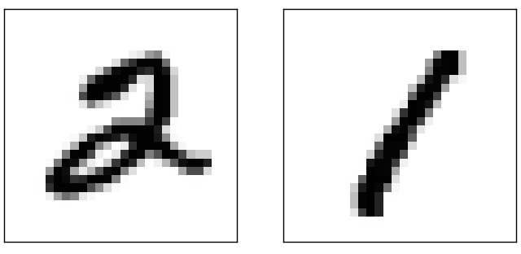
Отсюда идея: по обучающим данным вычислить среднюю «темноту» для каждой цифры 0, 1, 2,\(\ldots\), 9. Получив новое изображение, мы вычисляем, насколько оно тёмное, и предполагаем, что это та цифра, чья средняя темнота ближе всего. Процедура простая и легко программируется, так что выписывать код я не буду — если интересно, он есть в репозитории на GitHub. Но это заметное улучшение по сравнению со случайным угадыванием: правильно распознаются 2225 из 10 000 тестовых изображений, то есть точность 22.25 процента.
Нетрудно придумать и другие идеи, дающие точность в диапазоне от 20 до 50 процентов. Если постараться, можно превысить 50 процентов. Но чтобы получить гораздо более высокую точность, полезно взять проверенные алгоритмы машинного обучения. Попробуем один из самых известных — метод опорных векторов, или SVM (support vector machine). Если вы не знакомы с SVM, не беспокойтесь: разбираться в деталях их работы нам не понадобится. Вместо этого мы воспользуемся библиотекой Python scikit-learn, которая предоставляет простой интерфейс на Python к быстрой библиотеке SVM на C под названием LIBSVM.
Если запустить классификатор SVM из scikit-learn с настройками по умолчанию, он правильно распознаёт 9435 из 10 000 тестовых изображений. (Код доступен здесь.) Это большое улучшение по сравнению с наивным подходом, классифицирующим изображение по его темноте. По сути, SVM работает примерно так же хорошо, как наши нейронные сети, лишь чуть хуже. В следующих главах мы познакомимся с новыми методами, которые позволят улучшить наши нейронные сети так, что они будут работать гораздо лучше SVM.
Однако это ещё не конец истории. Результат 9435 из 10 000 получен с настройками SVM в scikit-learn по умолчанию. У SVM есть ряд настраиваемых параметров, и можно поискать такие, которые улучшат этот результат «из коробки». Я не буду проводить этот поиск сам, а отошлю вас к этой записи в блоге Андреаса Мюллера, если хотите узнать больше. Мюллер показывает, что, потрудившись над оптимизацией параметров SVM, можно поднять точность выше 98.5 процента. Иными словами, хорошо настроенный SVM ошибается лишь примерно на одной цифре из 70. Это очень неплохо! Могут ли нейронные сети справиться лучше?
Оказывается, могут. В настоящее время хорошо спроектированные нейронные сети превосходят на MNIST все остальные методы, включая SVM. Текущий (2013) рекорд — правильная классификация 9979 из 10 000 изображений. Его установили Ли Ван, Мэттью Зейлер, Сисинь Чжан, Ян Лекун и Роб Фергус. Большинство использованных ими методов мы увидим дальше в книге. На таком уровне качество близко к человеческому, а возможно, и лучше, поскольку довольно многие изображения MNIST трудно уверенно распознать даже человеку, например:
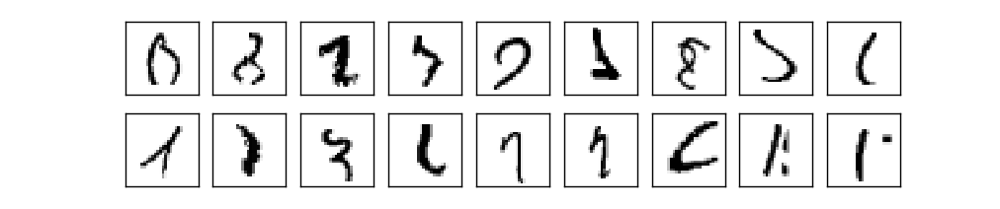
Думаю, вы согласитесь, что классифицировать такое непросто! Учитывая, что в наборе MNIST встречаются подобные изображения, поразительно, что нейронные сети могут точно классифицировать все тестовые изображения, кроме 21 из 10 000. Обычно в программировании мы считаем, что для решения сложной задачи вроде распознавания цифр MNIST нужен изощрённый алгоритм. Но даже нейронные сети из только что упомянутой статьи Вана и соавторов используют довольно простые алгоритмы — вариации того, что мы видели в этой главе. Вся сложность выучивается автоматически из обучающих данных. В каком-то смысле мораль и наших результатов, и результатов более изощрённых работ в том, что для некоторых задач
изощрённый алгоритм \(\le\) простой алгоритм обучения + хорошие обучающие данные.
1.7 На пути к глубокому обучению
Хотя наша нейронная сеть работает впечатляюще, её работа в некотором смысле загадочна. Веса и смещения сети были найдены автоматически. А значит, у нас нет готового объяснения того, как сеть делает то, что делает. Можно ли как-то понять принципы, по которым наша сеть классифицирует рукописные цифры? И, зная эти принципы, можно ли добиться большего?
Поставим вопрос резче: предположим, что через несколько десятилетий нейронные сети приведут к созданию искусственного интеллекта (ИИ). Будем ли мы понимать, как работают такие разумные сети? Может быть, сети останутся для нас непрозрачными, с весами и смещениями, которых мы не понимаем, поскольку они были выучены автоматически. На заре исследований ИИ люди надеялись, что попытки создать ИИ помогут понять и принципы, лежащие в основе интеллекта, а может быть, и работу человеческого мозга. Но, возможно, в итоге мы не поймём ни мозг, ни то, как работает искусственный интеллект!
Чтобы подступиться к этим вопросам, вспомним интерпретацию искусственных нейронов, которую я дал в начале главы, — как способ взвешивать свидетельства. Пусть мы хотим определить, есть ли на изображении человеческое лицо:
Эту задачу можно решать так же, как распознавание почерка: подать пиксели изображения на вход нейронной сети, а на выходе иметь один нейрон, сообщающий либо «Да, это лицо», либо «Нет, это не лицо».
Предположим, что мы так и делаем, но без алгоритма обучения. Вместо этого мы попытаемся спроектировать сеть вручную, подобрав подходящие веса и смещения. Как за это взяться? Если на время совсем забыть о нейронных сетях, можно воспользоваться эвристикой и разбить задачу на подзадачи: есть ли на изображении глаз слева вверху? Есть ли глаз справа вверху? Есть ли нос посередине? Есть ли рот внизу посередине? Есть ли волосы сверху? И так далее.
Если на несколько таких вопросов ответ «да» или хотя бы «вероятно, да», мы заключим, что на изображении, скорее всего, лицо. И наоборот, если на большинство вопросов ответ «нет», то, вероятно, это не лицо.
Конечно, это лишь грубая эвристика, и у неё много недостатков. Может быть, человек лысый, и волос у него нет. Может быть, видна лишь часть лица или лицо повёрнуто, так что некоторые его черты скрыты. И всё же эвристика подсказывает: если мы сможем решить подзадачи с помощью нейронных сетей, то, возможно, сумеем построить нейронную сеть для обнаружения лиц, объединив сети для подзадач. Вот возможная архитектура, в которой прямоугольники обозначают подсети. Заметьте, это не претендует на реалистичный подход к задаче обнаружения лиц; скорее, это помогает развить интуицию о том, как работают сети. Вот архитектура:
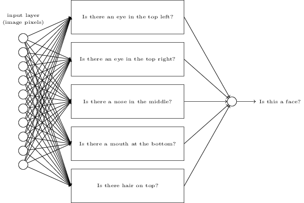
Вполне правдоподобно и то, что сами подсети тоже можно разложить на части. Пусть мы рассматриваем вопрос «Есть ли глаз слева вверху?». Его можно разбить на вопросы вроде «Есть ли бровь?», «Есть ли ресницы?», «Есть ли радужка?» и так далее. Конечно, на самом деле эти вопросы должны учитывать и расположение — «Находится ли бровь слева вверху и над радужкой?» и тому подобное, — но давайте не будем усложнять. Теперь сеть, отвечающую на вопрос «Есть ли глаз слева вверху?», можно разложить так:
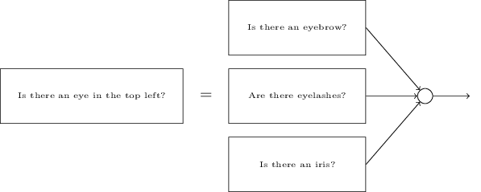
Эти вопросы тоже можно разбивать дальше и дальше, через много слоёв. В конце концов мы придём к подсетям, отвечающим на вопросы настолько простые, что на них легко ответить на уровне отдельных пикселей. Такие вопросы могут касаться, например, наличия или отсутствия очень простых форм в определённых местах изображения. На них могут отвечать отдельные нейроны, подключённые к «сырым» пикселям изображения.
В итоге получается сеть, которая разбивает очень сложный вопрос — есть ли на изображении лицо — на очень простые вопросы, на которые можно ответить на уровне отдельных пикселей. Она делает это с помощью последовательности из многих слоёв: первые слои отвечают на очень простые и конкретные вопросы о входном изображении, а последующие выстраивают иерархию всё более сложных и абстрактных понятий. Сети с такой многослойной структурой — с двумя и более скрытыми слоями — называются глубокими нейронными сетями.
Конечно, я не сказал, как выполнить такое рекурсивное разложение на подсети. Подбирать веса и смещения сети вручную, разумеется, непрактично. Вместо этого мы хотели бы использовать алгоритмы обучения, чтобы сеть автоматически выучивала веса и смещения — а значит, и иерархию понятий — из обучающих данных. В 1980-х и 1990-х годах исследователи пытались обучать глубокие сети стохастическим градиентным спуском и обратным распространением ошибки. К сожалению, если не считать нескольких особых архитектур, особых успехов они не добились. Сети учились, но очень медленно, и на практике зачастую слишком медленно, чтобы быть полезными.
Начиная с 2006 года был разработан набор методов, позволяющих обучать глубокие нейронные сети. Эти методы глубокого обучения основаны на стохастическом градиентном спуске и обратном распространении ошибки, но вводят и новые идеи. Они позволили обучать гораздо более глубокие (и большие) сети — сегодня сети с 5–10 скрытыми слоями обучают как нечто само собой разумеющееся. И оказывается, что на многих задачах они работают намного лучше неглубоких нейронных сетей, то есть сетей всего с одним скрытым слоем. Причина, конечно, в способности глубоких сетей выстраивать сложную иерархию понятий. Это немного похоже на то, как обычные языки программирования используют модульное проектирование и идеи абстракции, позволяющие создавать сложные компьютерные программы. Сравнивать глубокую сеть с неглубокой — примерно то же, что сравнивать язык программирования, в котором можно вызывать функции, с урезанным языком, где такой возможности нет. Абстракция в нейронных сетях принимает иную форму, чем в обычном программировании, но она не менее важна.